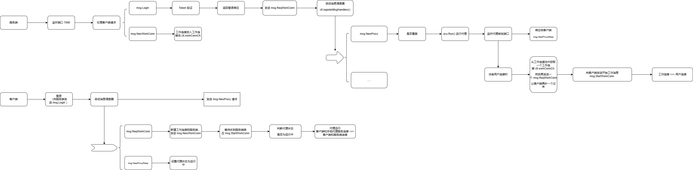
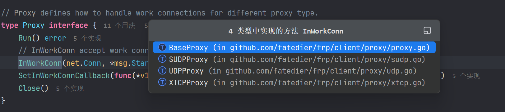
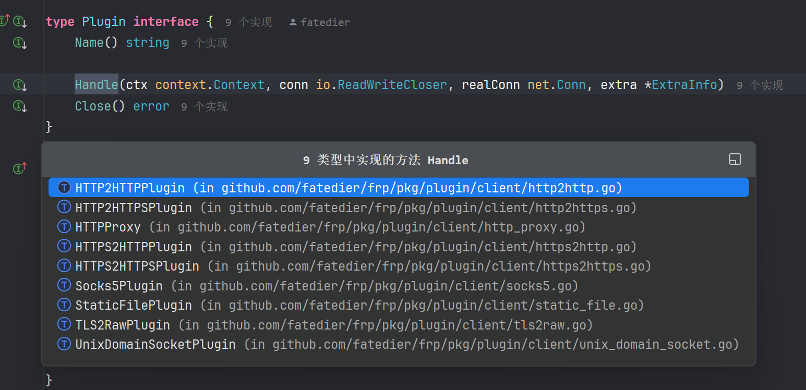
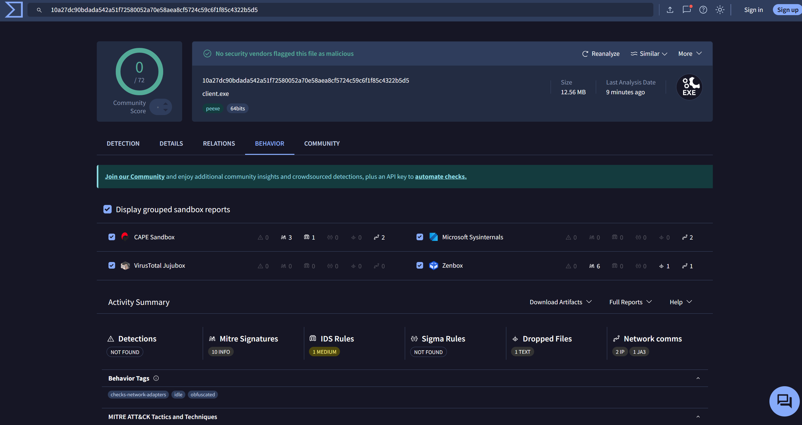
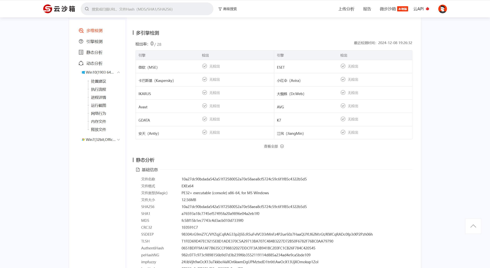
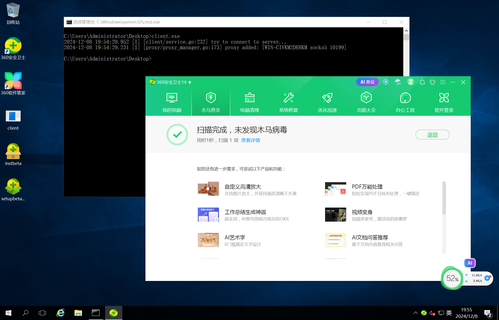
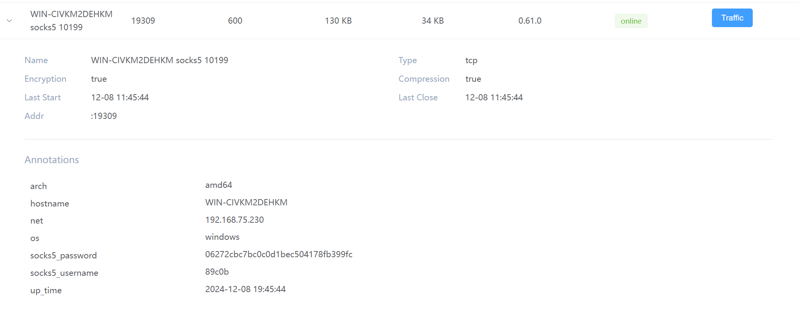
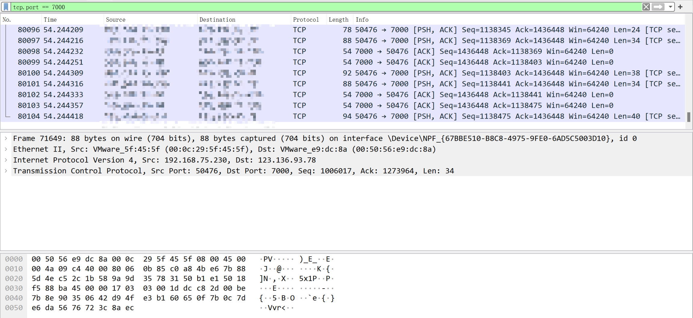
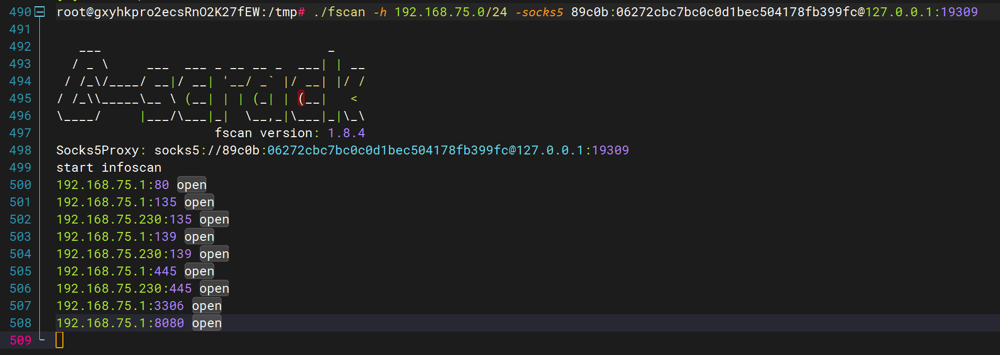
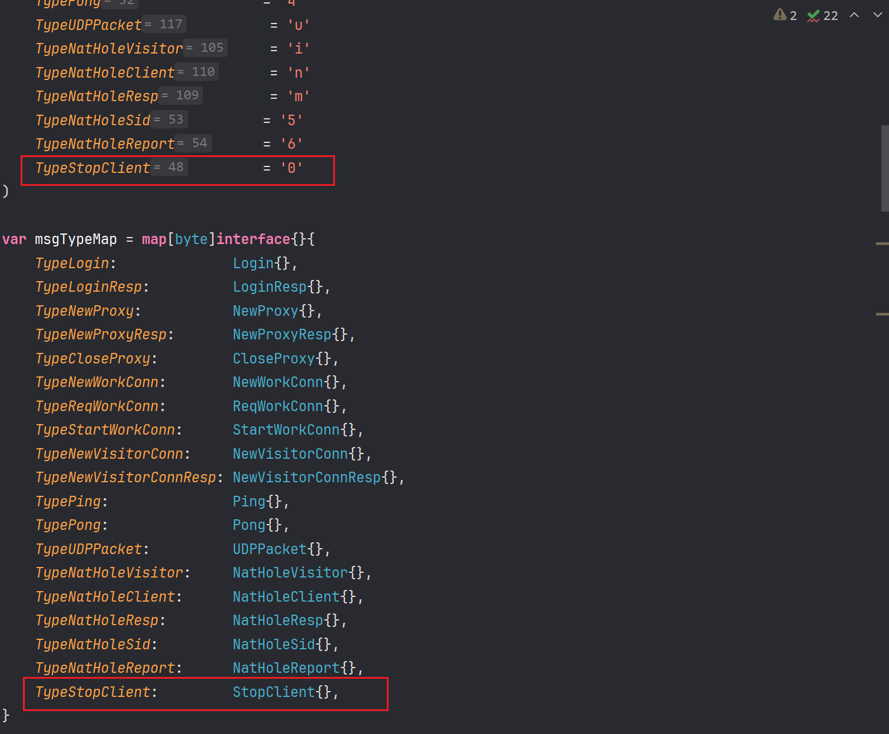

frp 源码学习
- date
- 2024-12-28 12:08:51
项目介绍
项目地址：https://github.com/fatedier/frp
使用文档：https://gofrp.org
目前版本：0.61
frp 是一个专注于内网穿透的高性能的反向代理应用，支持 TCP、UDP、HTTP、HTTPS 等多种协议，且支持 P2P 通信。可以将内网服务以安全、便捷的方式通过具有公网 IP 节点的中转暴露到公网。
简要流程

客户端
初始化部分
| func runClient(cfgFilePath string) error {
// 加载配置文件
cfg, proxyCfgs, visitorCfgs, isLegacyFormat, err := config.LoadClientConfig(cfgFilePath, strictConfigMode)
if err != nil {
return err
}
if isLegacyFormat {
fmt.Printf("WARNING: ini format is deprecated and the support will be removed in the future, " +
"please use yaml/json/toml format instead!\n")
}
// 验证
warning, err := validation.ValidateAllClientConfig(cfg, proxyCfgs, visitorCfgs)
if warning != nil {
fmt.Printf("WARNING: %v\n", warning)
}
if err != nil {
return err
}
// 开启服务
return startService(cfg, proxyCfgs, visitorCfgs, cfgFilePath)
}
|
| func startService(
cfg *v1.ClientCommonConfig,
proxyCfgs []v1.ProxyConfigurer,
visitorCfgs []v1.VisitorConfigurer,
cfgFile string,
) error {
log.InitLogger(cfg.Log.To, cfg.Log.Level, int(cfg.Log.MaxDays), cfg.Log.DisablePrintColor)
if cfgFile != "" {
log.Infof("start frpc service for config file [%s]", cfgFile)
defer log.Infof("frpc service for config file [%s] stopped", cfgFile)
}
// 客户端服务
svr, err := client.NewService(client.ServiceOptions{
Common: cfg,
ProxyCfgs: proxyCfgs,
VisitorCfgs: visitorCfgs,
ConfigFilePath: cfgFile,
})
if err != nil {
return err
}
// 优雅关闭
shouldGracefulClose := cfg.Transport.Protocol == "kcp" || cfg.Transport.Protocol == "quic"
// Capture the exit signal if we use kcp or quic.
if shouldGracefulClose {
go handleTermSignal(svr)
}
// 运行服务
return svr.Run(context.Background())
}
// 优雅关闭
func handleTermSignal(svr *client.Service) {
ch := make(chan os.Signal, 1)
signal.Notify(ch, syscall.SIGINT, syscall.SIGTERM)
<-ch
svr.GracefulClose(500 * time.Millisecond)
}
func (svr *Service) GracefulClose(d time.Duration) {
svr.gracefulShutdownDuration = d
svr.cancel(nil)
}
|
新建服务这里还有一些参数的配置：
| func NewService(options ServiceOptions) (*Service, error) {
// 设置默认参数
setServiceOptionsDefault(&options)
var webServer *httppkg.Server
if options.Common.WebServer.Port > 0 {
ws, err := httppkg.NewServer(options.Common.WebServer)
if err != nil {
return nil, err
}
webServer = ws
}
s := &Service{
ctx: context.Background(),
// 认证
authSetter: auth.NewAuthSetter(options.Common.Auth),
webServer: webServer,
common: options.Common,
configFilePath: options.ConfigFilePath,
proxyCfgs: options.ProxyCfgs,
// 普通的 TCP 不需要
visitorCfgs: options.VisitorCfgs,
clientSpec: options.ClientSpec,
connectorCreator: options.ConnectorCreator,
handleWorkConnCb: options.HandleWorkConnCb,
}
if webServer != nil {
webServer.RouteRegister(s.registerRouteHandlers)
}
return s, nil
}
func setServiceOptionsDefault(options *ServiceOptions) {
if options.Common != nil {
options.Common.Complete()
}
if options.ConnectorCreator == nil {
options.ConnectorCreator = NewConnector
}
}
func (c *ClientCommonConfig) Complete() {
c.ServerAddr = util.EmptyOr(c.ServerAddr, "0.0.0.0")
c.ServerPort = util.EmptyOr(c.ServerPort, 7000)
// 默认首次登录失败退出
c.LoginFailExit = util.EmptyOr(c.LoginFailExit, lo.ToPtr(true))
c.NatHoleSTUNServer = util.EmptyOr(c.NatHoleSTUNServer, "stun.easyvoip.com:3478")
c.Auth.Complete()
c.Log.Complete()
c.Transport.Complete()
c.WebServer.Complete()
c.UDPPacketSize = util.EmptyOr(c.UDPPacketSize, 1500)
}
func (c *ClientTransportConfig) Complete() {
c.Protocol = util.EmptyOr(c.Protocol, "tcp")
c.DialServerTimeout = util.EmptyOr(c.DialServerTimeout, 10)
c.DialServerKeepAlive = util.EmptyOr(c.DialServerKeepAlive, 7200)
c.ProxyURL = util.EmptyOr(c.ProxyURL, os.Getenv("http_proxy"))
c.PoolCount = util.EmptyOr(c.PoolCount, 1)
// 默认开启 TCP MUX 多路复用
c.TCPMux = util.EmptyOr(c.TCPMux, lo.ToPtr(true))
c.TCPMuxKeepaliveInterval = util.EmptyOr(c.TCPMuxKeepaliveInterval, 30)
if lo.FromPtr(c.TCPMux) {
// If TCPMux is enabled, heartbeat of application layer is unnecessary because we can rely on heartbeat in tcpmux.
// 使用 TCP MUX 就关闭掉心跳检测, 使用 MUX 中的
c.HeartbeatInterval = util.EmptyOr(c.HeartbeatInterval, -1)
c.HeartbeatTimeout = util.EmptyOr(c.HeartbeatTimeout, -1)
} else {
c.HeartbeatInterval = util.EmptyOr(c.HeartbeatInterval, 30)
c.HeartbeatTimeout = util.EmptyOr(c.HeartbeatTimeout, 90)
}
c.QUIC.Complete()
c.TLS.Complete()
}
func (c *TLSClientConfig) Complete() {
// 默认开启 TLS
c.Enable = util.EmptyOr(c.Enable, lo.ToPtr(true))
// 默认禁用 TLS 自定义首字节 0x17 特征
c.DisableCustomTLSFirstByte = util.EmptyOr(c.DisableCustomTLSFirstByte, lo.ToPtr(true))
}
|
服务启动：
| func (svr *Service) Run(ctx context.Context) error {
ctx, cancel := context.WithCancelCause(ctx)
svr.ctx = xlog.NewContext(ctx, xlog.FromContextSafe(ctx))
svr.cancel = cancel
// set custom DNSServer
if svr.common.DNSServer != "" {
netpkg.SetDefaultDNSAddress(svr.common.DNSServer)
}
if svr.webServer != nil {
go func() {
log.Infof("admin server listen on %s", svr.webServer.Address())
if err := svr.webServer.Run(); err != nil {
log.Warnf("admin server exit with error: %v", err)
}
}()
}
// first login to frps
// 首次登录 frps, 默认首次登录失败就退出
// 1. 尝试登录
// 2. 新建控制器
// 3. 启动消息调度器（ 消息的发送、各种响应的处理 ）
// 4. 向服务器注册代理
svr.loopLoginUntilSuccess(10*time.Second, lo.FromPtr(svr.common.LoginFailExit))
if svr.ctl == nil {
cancelCause := cancelErr{}
_ = errors.As(context.Cause(svr.ctx), &cancelCause)
return fmt.Errorf("login to the server failed: %v. With loginFailExit enabled, no additional retries will be attempted", cancelCause.Err)
}
// 保持控制器工作
// 上面的 loopLoginUntilSuccess 已经实现了 frpc 的正常工作
// 这里时为了保持工作, 如果上面的退出了, 这里会再次启动
go svr.keepControllerWorking()
// 阻塞
<-svr.ctx.Done()
// 退出
svr.stop()
return nil
}
|
loopLoginUntilSuccess
| func (svr *Service) loopLoginUntilSuccess(maxInterval time.Duration, firstLoginExit bool) {
xl := xlog.FromContextSafe(svr.ctx)
// 登录函数
loginFunc := func() (bool, error) {
xl.Infof("try to connect to server...")
// 登录到服务端
conn, connector, err := svr.login()
if err != nil {
xl.Warnf("connect to server error: %v", err)
if firstLoginExit {
svr.cancel(cancelErr{Err: err})
}
return false, err
}
svr.cfgMu.RLock()
proxyCfgs := svr.proxyCfgs
visitorCfgs := svr.visitorCfgs
svr.cfgMu.RUnlock()
// 默认开启连接加密
connEncrypted := true
if svr.clientSpec != nil && svr.clientSpec.Type == "ssh-tunnel" {
connEncrypted = false
}
sessionCtx := &SessionContext{
Common: svr.common,
RunID: svr.runID,
Conn: conn,
ConnEncrypted: connEncrypted,
AuthSetter: svr.authSetter,
Connector: connector,
}
// 客户端控制器
ctl, err := NewControl(svr.ctx, sessionCtx)
if err != nil {
conn.Close()
xl.Errorf("NewControl error: %v", err)
return false, err
}
ctl.SetInWorkConnCallback(svr.handleWorkConnCb)
// 启动代理
ctl.Run(proxyCfgs, visitorCfgs)
// close and replace previous control
svr.ctlMu.Lock()
if svr.ctl != nil {
svr.ctl.Close()
}
svr.ctl = ctl
svr.ctlMu.Unlock()
return true, nil
}
// try to reconnect to server until success
// backoff 退避机制
wait.BackoffUntil(loginFunc, wait.NewFastBackoffManager(
wait.FastBackoffOptions{
Duration: time.Second,
Factor: 2,
Jitter: 0.1,
MaxDuration: maxInterval,
}), true, svr.ctx.Done())
}
|
整个函数的逻辑就是运行 loginFunc 函数，这里就先看这个函数。
wait.BackoffUntil 退避机制介绍：
什么是退避算法？通常我们的某服务发生故障时，我们会固定间隔时间来重试一次？但这样会带来一些问题，同一时间有很多请求在重试可能会造成无意义的请求。
指数退避算法会利用抖动（随机延迟）来防止连续的冲突。 效果如下，每次间隔的时间都是指数上升，另外加了少许的随机。
相关参考链接：
- https://blog.csdn.net/gitblog_00062/article/details/139036688
- golang backoff 重试指数退避算法
svr.login()
| func (svr *Service) login() (conn net.Conn, connector Connector, err error) {
xl := xlog.FromContextSafe(svr.ctx)
// 创建连接器 => defaultConnectorImpl
connector = svr.connectorCreator(svr.ctx, svr.common)
// 创建客户端到服务端的连接
if err = connector.Open(); err != nil {
return nil, nil, err
}
defer func() {
if err != nil {
connector.Close()
}
}()
// 获取连接流
conn, err = connector.Connect()
if err != nil {
return
}
// 封装登录消息
loginMsg := &msg.Login{
Arch: runtime.GOARCH,
Os: runtime.GOOS,
PoolCount: svr.common.Transport.PoolCount,
User: svr.common.User,
Version: version.Full(),
Timestamp: time.Now().Unix(),
RunID: svr.runID,
Metas: svr.common.Metadatas,
}
if svr.clientSpec != nil {
loginMsg.ClientSpec = *svr.clientSpec
}
// Add auth
// 设置登录消息中的私钥
if err = svr.authSetter.SetLogin(loginMsg); err != nil {
return
}
// 发送登录请求 => 这里是直接发送的 JSON 还没有加密, 但是使用 TLS 的话也看不出来
if err = msg.WriteMsg(conn, loginMsg); err != nil {
return
}
var loginRespMsg msg.LoginResp
// 等待响应超时时间 10s
_ = conn.SetReadDeadline(time.Now().Add(10 * time.Second))
// 获取响应
if err = msg.ReadMsgInto(conn, &loginRespMsg); err != nil {
return
}
// 清空
_ = conn.SetReadDeadline(time.Time{})
// 登录失败
if loginRespMsg.Error != "" {
err = fmt.Errorf("%s", loginRespMsg.Error)
xl.Errorf("%s", loginRespMsg.Error)
return
}
// 登录成功
svr.runID = loginRespMsg.RunID
xl.AddPrefix(xlog.LogPrefix{Name: "runID", Value: svr.runID})
xl.Infof("login to server success, get run id [%s]", loginRespMsg.RunID)
return
}
|
connector.Open()
| // Open opens an underlying connection to the server.
// The underlying connection is either a TCP connection or a QUIC connection.
// After the underlying connection is established, you can call Connect() to get a stream.
// If TCPMux isn't enabled, the underlying connection is nil, you will get a new real TCP connection every time you call Connect().
// 打开到服务器的底层连接。
// 底层连接是TCP连接或QUIC连接。
// 底层连接建立后，你可以调用Connect()来获取流。
// 如果TCPMux未启用，底层连接为nil，每次调用Connect（）时都将获得一个新的真实TCP连接。
func (c *defaultConnectorImpl) Open() error {
xl := xlog.FromContextSafe(c.ctx)
// special for quic
// quic 的连接
if strings.EqualFold(c.cfg.Transport.Protocol, "quic") {
var tlsConfig *tls.Config
var err error
sn := c.cfg.Transport.TLS.ServerName
if sn == "" {
sn = c.cfg.ServerAddr
}
if lo.FromPtr(c.cfg.Transport.TLS.Enable) {
tlsConfig, err = transport.NewClientTLSConfig(
c.cfg.Transport.TLS.CertFile,
c.cfg.Transport.TLS.KeyFile,
c.cfg.Transport.TLS.TrustedCaFile,
sn)
} else {
tlsConfig, err = transport.NewClientTLSConfig("", "", "", sn)
}
if err != nil {
xl.Warnf("fail to build tls configuration, err: %v", err)
return err
}
tlsConfig.NextProtos = []string{"frp"}
conn, err := quic.DialAddr(
c.ctx,
net.JoinHostPort(c.cfg.ServerAddr, strconv.Itoa(c.cfg.ServerPort)),
tlsConfig, &quic.Config{
MaxIdleTimeout: time.Duration(c.cfg.Transport.QUIC.MaxIdleTimeout) * time.Second,
MaxIncomingStreams: int64(c.cfg.Transport.QUIC.MaxIncomingStreams),
KeepAlivePeriod: time.Duration(c.cfg.Transport.QUIC.KeepalivePeriod) * time.Second,
})
if err != nil {
return err
}
c.quicConn = conn
return nil
}
if !lo.FromPtr(c.cfg.Transport.TCPMux) {
return nil
}
// 建立 TCP 连接
conn, err := c.realConnect()
if err != nil {
return err
}
// 多路复用 => github.com/hashicorp/yamux
fmuxCfg := fmux.DefaultConfig()
fmuxCfg.KeepAliveInterval = time.Duration(c.cfg.Transport.TCPMuxKeepaliveInterval) * time.Second
fmuxCfg.LogOutput = io.Discard
fmuxCfg.MaxStreamWindowSize = 6 * 1024 * 1024
session, err := fmux.Client(conn, fmuxCfg)
if err != nil {
return err
}
c.muxSession = session
return nil
}
|
c.realConnect()
使用作者封装的 github.com/fatedier/golib/net 去建立连接。
| func (c *defaultConnectorImpl) realConnect() (net.Conn, error) {
xl := xlog.FromContextSafe(c.ctx)
var tlsConfig *tls.Config
var err error
tlsEnable := lo.FromPtr(c.cfg.Transport.TLS.Enable)
if c.cfg.Transport.Protocol == "wss" {
tlsEnable = true
}
// TLS 配置 => 默认开启 TLS
if tlsEnable {
sn := c.cfg.Transport.TLS.ServerName
if sn == "" {
sn = c.cfg.ServerAddr
}
tlsConfig, err = transport.NewClientTLSConfig(
c.cfg.Transport.TLS.CertFile,
c.cfg.Transport.TLS.KeyFile,
c.cfg.Transport.TLS.TrustedCaFile,
sn)
if err != nil {
xl.Warnf("fail to build tls configuration, err: %v", err)
return nil, err
}
}
proxyType, addr, auth, err := libnet.ParseProxyURL(c.cfg.Transport.ProxyURL)
if err != nil {
xl.Errorf("fail to parse proxy url")
return nil, err
}
// 连接的配置信息
dialOptions := []libnet.DialOption{}
protocol := c.cfg.Transport.Protocol
switch protocol {
case "websocket":
protocol = "tcp"
dialOptions = append(dialOptions, libnet.WithAfterHook(libnet.AfterHook{Hook: netpkg.DialHookWebsocket(protocol, "")}))
dialOptions = append(dialOptions, libnet.WithAfterHook(libnet.AfterHook{
Hook: netpkg.DialHookCustomTLSHeadByte(tlsConfig != nil, lo.FromPtr(c.cfg.Transport.TLS.DisableCustomTLSFirstByte)),
}))
dialOptions = append(dialOptions, libnet.WithTLSConfig(tlsConfig))
case "wss":
protocol = "tcp"
dialOptions = append(dialOptions, libnet.WithTLSConfigAndPriority(100, tlsConfig))
// Make sure that if it is wss, the websocket hook is executed after the tls hook.
dialOptions = append(dialOptions, libnet.WithAfterHook(libnet.AfterHook{Hook: netpkg.DialHookWebsocket(protocol, tlsConfig.ServerName), Priority: 110}))
default:
// 默认的配置
// 自定义 TLS 首字节设置
dialOptions = append(dialOptions, libnet.WithAfterHook(libnet.AfterHook{
Hook: netpkg.DialHookCustomTLSHeadByte(tlsConfig != nil, lo.FromPtr(c.cfg.Transport.TLS.DisableCustomTLSFirstByte)),
}))
// TLS Config
dialOptions = append(dialOptions, libnet.WithTLSConfig(tlsConfig))
}
if c.cfg.Transport.ConnectServerLocalIP != "" {
dialOptions = append(dialOptions, libnet.WithLocalAddr(c.cfg.Transport.ConnectServerLocalIP))
}
// 必须的配置
dialOptions = append(dialOptions,
libnet.WithProtocol(protocol),
libnet.WithTimeout(time.Duration(c.cfg.Transport.DialServerTimeout)*time.Second),
libnet.WithKeepAlive(time.Duration(c.cfg.Transport.DialServerKeepAlive)*time.Second),
libnet.WithProxy(proxyType, addr),
libnet.WithProxyAuth(auth),
)
// 建立连接
conn, err := libnet.DialContext(
c.ctx,
net.JoinHostPort(c.cfg.ServerAddr, strconv.Itoa(c.cfg.ServerPort)),
dialOptions...,
)
return conn, err
}
func DialHookCustomTLSHeadByte(enableTLS bool, disableCustomTLSHeadByte bool) libnet.AfterHookFunc {
return func(ctx context.Context, c net.Conn, addr string) (context.Context, net.Conn, error) {
// 开启 TLS 和使用自定义首字节就先向连接中写入自定义的 0x17 => 默认是关闭的
if enableTLS && !disableCustomTLSHeadByte {
_, err := c.Write([]byte{byte(FRPTLSHeadByte)})
if err != nil {
return nil, nil, err
}
}
return ctx, c, nil
}
}
|
多路复用使用的是 github.com/hashicorp/yamux 库，Yamux 提供 session 管理机制，主要用来保存 Yamux session 和 Agent 对应关系。 每个内网可以运行多个 Agent，每次新建连接会从已有的 Agent session 列表中随机选择一个 session，并通过创建一个新的 Yamux Stream 机制复用连接。
connector.Connect()
| // Connect returns a stream from the underlying connection, or a new TCP connection if TCPMux isn't enabled.
func (c *defaultConnectorImpl) Connect() (net.Conn, error) {
// QUIC 或者 TCP MUX 返回一个流
if c.quicConn != nil {
stream, err := c.quicConn.OpenStreamSync(context.Background())
if err != nil {
return nil, err
}
return netpkg.QuicStreamToNetConn(stream, c.quicConn), nil
} else if c.muxSession != nil {
stream, err := c.muxSession.OpenStream()
if err != nil {
return nil, err
}
return stream, nil
}
// TCP 的就创建一个连接
return c.realConnect()
}
|
svr.authSetter.SetLogin(loginMsg)
认证有 Token 和 Oidc ，这里只看 Token：
基于用户设置的 Token 和时间戳来生成一个加密的私钥。
| func (auth *TokenAuthSetterVerifier) SetLogin(loginMsg *msg.Login) error {
loginMsg.PrivilegeKey = util.GetAuthKey(auth.token, loginMsg.Timestamp)
return nil
}
func GetAuthKey(token string, timestamp int64) (key string) {
md5Ctx := md5.New()
md5Ctx.Write([]byte(token))
md5Ctx.Write([]byte(strconv.FormatInt(timestamp, 10)))
data := md5Ctx.Sum(nil)
return hex.EncodeToString(data)
}
|
消息
| package msg
import (
"io"
jsonMsg "github.com/fatedier/golib/msg/json"
)
type Message = jsonMsg.Message
var msgCtl *jsonMsg.MsgCtl
func init() {
msgCtl = jsonMsg.NewMsgCtl()
for typeByte, msg := range msgTypeMap {
msgCtl.RegisterMsg(typeByte, msg)
}
}
func ReadMsg(c io.Reader) (msg Message, err error) {
return msgCtl.ReadMsg(c)
}
func ReadMsgInto(c io.Reader, msg Message) (err error) {
return msgCtl.ReadMsgInto(c, msg)
}
func WriteMsg(c io.Writer, msg interface{}) (err error) {
return msgCtl.WriteMsg(c, msg)
}
|
github.com/fatedier/golib/msg/json 库，可以发现这里就是直接去向连接中写入 json 的消息了，所以如果是普通的 TCP 连接就是开了流量加密的话也是能够看到特征的。因为登录这里并没有流量加密。当然默认的 TLS 就不会出现什么特征。
| package json
import (
"encoding/binary"
"errors"
"io"
)
var (
ErrMsgType = errors.New("message type error")
ErrMaxMsgLength = errors.New("message length exceed the limit")
ErrMsgLength = errors.New("message length error")
ErrMsgFormat = errors.New("message format error")
)
func (msgCtl *MsgCtl) readMsg(c io.Reader) (typeByte byte, buffer []byte, err error) {
buffer = make([]byte, 1)
_, err = c.Read(buffer)
if err != nil {
return
}
typeByte = buffer[0]
if _, ok := msgCtl.typeMap[typeByte]; !ok {
err = ErrMsgType
return
}
var length int64
err = binary.Read(c, binary.BigEndian, &length)
if err != nil {
return
}
if length > msgCtl.maxMsgLength {
err = ErrMaxMsgLength
return
} else if length < 0 {
err = ErrMsgLength
return
}
buffer = make([]byte, length)
n, err := io.ReadFull(c, buffer)
if err != nil {
return
}
if int64(n) != length {
err = ErrMsgFormat
}
return
}
func (msgCtl *MsgCtl) ReadMsg(c io.Reader) (msg Message, err error) {
typeByte, buffer, err := msgCtl.readMsg(c)
if err != nil {
return
}
return msgCtl.UnPack(typeByte, buffer)
}
func (msgCtl *MsgCtl) ReadMsgInto(c io.Reader, msg Message) (err error) {
_, buffer, err := msgCtl.readMsg(c)
if err != nil {
return
}
return msgCtl.UnPackInto(buffer, msg)
}
func (msgCtl *MsgCtl) WriteMsg(c io.Writer, msg interface{}) (err error) {
buffer, err := msgCtl.Pack(msg)
if err != nil {
return
}
if _, err = c.Write(buffer); err != nil {
return
}
return nil
}
|
NewControl(svr.ctx, sessionCtx)
| func NewControl(ctx context.Context, sessionCtx *SessionContext) (*Control, error) {
// new xlog instance
// 控制器
ctl := &Control{
ctx: ctx,
xl: xlog.FromContextSafe(ctx),
sessionCtx: sessionCtx,
doneCh: make(chan struct{}),
}
// 上次响应时间
ctl.lastPong.Store(time.Now())
// 消息调度器
if sessionCtx.ConnEncrypted {
// 创建一个加解密的 io.ReadWriter
// []byte(sessionCtx.Common.Auth.Token) 是加解密的 Key
cryptoRW, err := netpkg.NewCryptoReadWriter(sessionCtx.Conn, []byte(sessionCtx.Common.Auth.Token))
if err != nil {
return nil, err
}
// 创建消息调度器
ctl.msgDispatcher = msg.NewDispatcher(cryptoRW)
} else {
ctl.msgDispatcher = msg.NewDispatcher(sessionCtx.Conn)
}
// 注册一下各类消息的处理的各种 handler
ctl.registerMsgHandlers()
// 把消息调度器的 SendChannel 赋值到 ctl.msgTransporter 后续其他地方使用这个去发送消息
ctl.msgTransporter = transport.NewMessageTransporter(ctl.msgDispatcher.SendChannel())
// 新建代理管理器
ctl.pm = proxy.NewManager(ctl.ctx, sessionCtx.Common, ctl.msgTransporter)
ctl.vm = visitor.NewManager(ctl.ctx, sessionCtx.RunID, sessionCtx.Common, ctl.connectServer, ctl.msgTransporter)
return ctl, nil
}
|
消息调度器
对发送和响应的处理。
| package msg
import (
"io"
"reflect"
)
func AsyncHandler(f func(Message)) func(Message) {
return func(m Message) {
go f(m)
}
}
// Dispatcher is used to send messages to net.Conn or register handlers for messages read from net.Conn.
type Dispatcher struct {
rw io.ReadWriter
sendCh chan Message
doneCh chan struct{}
// 对服务端响应消息的处理程序
msgHandlers map[reflect.Type]func(Message)
defaultHandler func(Message)
}
func NewDispatcher(rw io.ReadWriter) *Dispatcher {
return &Dispatcher{
rw: rw,
sendCh: make(chan Message, 100),
doneCh: make(chan struct{}),
msgHandlers: make(map[reflect.Type]func(Message)),
}
}
// Run will block until io.EOF or some error occurs.
// 启动消息的发送和读取处理
func (d *Dispatcher) Run() {
go d.sendLoop()
go d.readLoop()
}
// sendLoop 发送消息
func (d *Dispatcher) sendLoop() {
for {
select {
case <-d.doneCh:
return
case m := <-d.sendCh:
_ = WriteMsg(d.rw, m)
}
}
}
// readLoop 读取消息并根据消息类型使用不同的 handler 进行处理
func (d *Dispatcher) readLoop() {
for {
m, err := ReadMsg(d.rw)
if err != nil {
close(d.doneCh)
return
}
if handler, ok := d.msgHandlers[reflect.TypeOf(m)]; ok {
handler(m)
} else if d.defaultHandler != nil {
d.defaultHandler(m)
}
}
}
// Send 封装的发送消息方法 把消息放到 sendCh
func (d *Dispatcher) Send(m Message) error {
select {
case <-d.doneCh:
return io.EOF
case d.sendCh <- m:
return nil
}
}
func (d *Dispatcher) SendChannel() chan Message {
return d.sendCh
}
// 注册消息处理程序
func (d *Dispatcher) RegisterHandler(msg Message, handler func(Message)) {
d.msgHandlers[reflect.TypeOf(msg)] = handler
}
func (d *Dispatcher) RegisterDefaultHandler(handler func(Message)) {
d.defaultHandler = handler
}
func (d *Dispatcher) Done() chan struct{} {
return d.doneCh
}
|
消息处理 handlers
| func (ctl *Control) registerMsgHandlers() {
// 请求工作连接
ctl.msgDispatcher.RegisterHandler(&msg.ReqWorkConn{}, msg.AsyncHandler(ctl.handleReqWorkConn))
// 新建代理响应
ctl.msgDispatcher.RegisterHandler(&msg.NewProxyResp{}, ctl.handleNewProxyResp)
ctl.msgDispatcher.RegisterHandler(&msg.NatHoleResp{}, ctl.handleNatHoleResp)
// Pong
ctl.msgDispatcher.RegisterHandler(&msg.Pong{}, ctl.handlePong)
}
|
msg.ReqWorkConn
| type ReqWorkConn struct{}
type NewWorkConn struct {
RunID string `json:"run_id,omitempty"`
PrivilegeKey string `json:"privilege_key,omitempty"`
Timestamp int64 `json:"timestamp,omitempty"`
}
type StartWorkConn struct {
ProxyName string `json:"proxy_name,omitempty"`
SrcAddr string `json:"src_addr,omitempty"`
DstAddr string `json:"dst_addr,omitempty"`
SrcPort uint16 `json:"src_port,omitempty"`
DstPort uint16 `json:"dst_port,omitempty"`
Error string `json:"error,omitempty"`
}
func (ctl *Control) handleReqWorkConn(_ msg.Message) {
xl := ctl.xl
// 连接到服务端
workConn, err := ctl.connectServer()
if err != nil {
xl.Warnf("start new connection to server error: %v", err)
return
}
// 新建工作的消息
m := &msg.NewWorkConn{
RunID: ctl.sessionCtx.RunID,
}
// 认证
if err = ctl.sessionCtx.AuthSetter.SetNewWorkConn(m); err != nil {
xl.Warnf("error during NewWorkConn authentication: %v", err)
workConn.Close()
return
}
// 发送消息
if err = msg.WriteMsg(workConn, m); err != nil {
xl.Warnf("work connection write to server error: %v", err)
workConn.Close()
return
}
// 接收服务端响应的开始工作的消息
var startMsg msg.StartWorkConn
if err = msg.ReadMsgInto(workConn, &startMsg); err != nil {
xl.Tracef("work connection closed before response StartWorkConn message: %v", err)
workConn.Close()
return
}
if startMsg.Error != "" {
xl.Errorf("StartWorkConn contains error: %s", startMsg.Error)
workConn.Close()
return
}
// dispatch this work connection to related proxy
// 把这个工作连接分给相关代理使用
ctl.pm.HandleWorkConn(startMsg.ProxyName, workConn, &startMsg)
}
// connectServer return a new connection to frps
func (ctl *Control) connectServer() (net.Conn, error) {
return ctl.sessionCtx.Connector.Connect()
}
func (auth *TokenAuthSetterVerifier) SetNewWorkConn(newWorkConnMsg *msg.NewWorkConn) error {
if !slices.Contains(auth.additionalAuthScopes, v1.AuthScopeNewWorkConns) {
return nil
}
newWorkConnMsg.Timestamp = time.Now().Unix()
newWorkConnMsg.PrivilegeKey = util.GetAuthKey(auth.token, newWorkConnMsg.Timestamp)
return nil
}
// 连接分配给代理
func (pm *Manager) HandleWorkConn(name string, workConn net.Conn, m *msg.StartWorkConn) {
pm.mu.RLock()
pw, ok := pm.proxies[name]
pm.mu.RUnlock()
if ok {
pw.InWorkConn(workConn, m)
} else {
workConn.Close()
}
}
func (pw *Wrapper) InWorkConn(workConn net.Conn, m *msg.StartWorkConn) {
xl := pw.xl
pw.mu.RLock()
pxy := pw.pxy
pw.mu.RUnlock()
// 工作状态 Running
if pxy != nil && pw.Phase == ProxyPhaseRunning {
xl.Debugf("start a new work connection, localAddr: %s remoteAddr: %s", workConn.LocalAddr().String(), workConn.RemoteAddr().String())
go pxy.InWorkConn(workConn, m)
} else {
workConn.Close()
}
}
|
go pxy.InWorkConn(workConn, m)

| func (pxy *BaseProxy) InWorkConn(conn net.Conn, m *msg.StartWorkConn) {
if pxy.inWorkConnCallback != nil {
if !pxy.inWorkConnCallback(pxy.baseCfg, conn, m) {
return
}
}
// 处理 TCP 的工作连接
pxy.HandleTCPWorkConnection(conn, m, []byte(pxy.clientCfg.Auth.Token))
}
|
| func (pxy *BaseProxy) HandleTCPWorkConnection(workConn net.Conn, m *msg.StartWorkConn, encKey []byte) {
xl := pxy.xl
baseCfg := pxy.baseCfg
var (
remote io.ReadWriteCloser
err error
)
// 把工作连接 net.Conn 给 remote io.ReadWriteCloser
// net.Conn 实现了 io.ReadWriteCloser 接口 => Reader Writer Closer
remote = workConn
if pxy.limiter != nil {
remote = libio.WrapReadWriteCloser(limit.NewReader(workConn, pxy.limiter), limit.NewWriter(workConn, pxy.limiter), func() error {
return workConn.Close()
})
}
xl.Tracef("handle tcp work connection, useEncryption: %t, useCompression: %t",
baseCfg.Transport.UseEncryption, baseCfg.Transport.UseCompression)
// 加密
if baseCfg.Transport.UseEncryption {
remote, err = libio.WithEncryption(remote, encKey)
if err != nil {
workConn.Close()
xl.Errorf("create encryption stream error: %v", err)
return
}
}
// 压缩
var compressionResourceRecycleFn func()
if baseCfg.Transport.UseCompression {
remote, compressionResourceRecycleFn = libio.WithCompressionFromPool(remote)
}
// check if we need to send proxy protocol info
// 检查代理信息 源地址和源端口
var extraInfo plugin.ExtraInfo
if m.SrcAddr != "" && m.SrcPort != 0 {
if m.DstAddr == "" {
m.DstAddr = "127.0.0.1"
}
srcAddr, _ := net.ResolveTCPAddr("tcp", net.JoinHostPort(m.SrcAddr, strconv.Itoa(int(m.SrcPort))))
dstAddr, _ := net.ResolveTCPAddr("tcp", net.JoinHostPort(m.DstAddr, strconv.Itoa(int(m.DstPort))))
extraInfo.SrcAddr = srcAddr
extraInfo.DstAddr = dstAddr
}
if baseCfg.Transport.ProxyProtocolVersion != "" && m.SrcAddr != "" && m.SrcPort != 0 {
h := &pp.Header{
Command: pp.PROXY,
SourceAddr: extraInfo.SrcAddr,
DestinationAddr: extraInfo.DstAddr,
}
if strings.Contains(m.SrcAddr, ".") {
h.TransportProtocol = pp.TCPv4
} else {
h.TransportProtocol = pp.TCPv6
}
if baseCfg.Transport.ProxyProtocolVersion == "v1" {
h.Version = 1
} else if baseCfg.Transport.ProxyProtocolVersion == "v2" {
h.Version = 2
}
extraInfo.ProxyProtocolHeader = h
}
// 使用插件处理
if pxy.proxyPlugin != nil {
// if plugin is set, let plugin handle connection first
xl.Debugf("handle by plugin: %s", pxy.proxyPlugin.Name())
pxy.proxyPlugin.Handle(pxy.ctx, remote, workConn, &extraInfo)
xl.Debugf("handle by plugin finished")
return
}
// 非插件处理
// 和本地要转发的端口连接连接 => 本地连接
localConn, err := libnet.Dial(
net.JoinHostPort(baseCfg.LocalIP, strconv.Itoa(baseCfg.LocalPort)),
libnet.WithTimeout(10*time.Second),
)
if err != nil {
workConn.Close()
xl.Errorf("connect to local service [%s:%d] error: %v", baseCfg.LocalIP, baseCfg.LocalPort, err)
return
}
xl.Debugf("join connections, localConn(l[%s] r[%s]) workConn(l[%s] r[%s])", localConn.LocalAddr().String(),
localConn.RemoteAddr().String(), workConn.LocalAddr().String(), workConn.RemoteAddr().String())
if extraInfo.ProxyProtocolHeader != nil {
if _, err := extraInfo.ProxyProtocolHeader.WriteTo(localConn); err != nil {
workConn.Close()
xl.Errorf("write proxy protocol header to local conn error: %v", err)
return
}
}
// 本地连接 <=> 远程连接 实现端口转发功能
_, _, errs := libio.Join(localConn, remote)
xl.Debugf("join connections closed")
if len(errs) > 0 {
xl.Tracef("join connections errors: %v", errs)
}
// 压缩
if compressionResourceRecycleFn != nil {
compressionResourceRecycleFn()
}
}
|
libio.Join(localConn, remote)
涉及到的 io 包的函数：
func Copy(dst Writer, src Reader) (written int64, err error)：从 Reader 中读取数据并写入到 Writer 中，直到无法再从 Reader 中读取到任何数据（EOF）或发生错误，返回被复制的字节数和任何发生的错误信息func CopyBuffer(dst Writer, src Reader, buf []byte) (written int64, err error)：用于在 io.Reader 和 io.Writer 之间缓冲复制数据，与 io.Copy 函数不同的是，使用 io.CopyBuffer 可以手动控制缓冲区的大小。如果 buf 为 nil，则分配一个；如果长度为零，则会触发 panic。io.CopyBuffer 避免了 io.Copy 可能出现的大内存使用问题，因为可以使用具有固定大小的缓冲区，所以可以更好地控制内存使用、提高性能
缓冲写入和读取：避免频繁操作文件、减少访问本地磁盘次数，从而提高效率
写入流程:
- 当写入内容小于缓冲区(
buf)的可用大小时,内容写入缓存区(buf)；
- 当缓冲区(
buf)空间不够时，一次性将缓冲区(buf)内容写入文件,并清空缓存区(buf)；
- 当写入内容大于缓冲区(
buf)空间时，将内容直接写入文件；
读取流程:
- 当读取内容小于缓冲区(
buf)空间时,从缓存区(buf)读取；
- 当缓冲区(
buf)内容为空时，一次性从文件中读取大小等于缓冲区(buf)的内容；
- 当写入内容大于缓冲区(
buf)空间时，将内容直接写入文件；
| // Join two io.ReadWriteCloser and do some operations.
func Join(c1 io.ReadWriteCloser, c2 io.ReadWriteCloser) (inCount int64, outCount int64, errors []error) {
var wait sync.WaitGroup
recordErrs := make([]error, 2)
pipe := func(number int, to io.ReadWriteCloser, from io.ReadWriteCloser, count *int64) {
defer wait.Done()
defer to.Close()
defer from.Close()
// 获取 16k 的缓冲区
buf := pool.GetBuf(16 * 1024)
defer pool.PutBuf(buf)
// 从 from 中读取数据并写入到 to 中
*count, recordErrs[number] = io.CopyBuffer(to, from, buf)
}
wait.Add(2)
go pipe(0, c1, c2, &inCount)
go pipe(1, c2, c1, &outCount)
wait.Wait()
for _, e := range recordErrs {
if e != nil {
errors = append(errors, e)
}
}
return
}
|
| import (
"sync"
)
// 对象池
var (
bufPool16k sync.Pool
bufPool5k sync.Pool
bufPool2k sync.Pool
bufPool1k sync.Pool
bufPool sync.Pool
)
// 复用
func GetBuf(size int) []byte {
var x interface{}
switch {
case size >= 16*1024:
x = bufPool16k.Get()
case size >= 5*1024:
x = bufPool5k.Get()
case size >= 2*1024:
x = bufPool2k.Get()
case size >= 1*1024:
x = bufPool1k.Get()
default:
x = bufPool.Get()
}
if x == nil {
return make([]byte, size)
}
buf := x.([]byte)
// cap 返回切片长度
if cap(buf) < size {
// 分配空间创建缓冲区
return make([]byte, size)
}
return buf[:size]
}
func PutBuf(buf []byte) {
// Put 到对象池中
size := cap(buf)
switch {
case size >= 16*1024:
bufPool16k.Put(buf)
case size >= 5*1024:
bufPool5k.Put(buf)
case size >= 2*1024:
bufPool2k.Put(buf)
case size >= 1*1024:
bufPool1k.Put(buf)
default:
bufPool.Put(buf)
}
}
type Buffer struct {
pool sync.Pool
}
|
插件的处理：
| pxy.proxyPlugin.Handle(pxy.ctx, remote, workConn, &extraInfo)
|

| //go:build !frps
package plugin
import (
"context"
"io"
"log"
"net"
gosocks5 "github.com/armon/go-socks5"
v1 "github.com/fatedier/frp/pkg/config/v1"
netpkg "github.com/fatedier/frp/pkg/util/net"
)
func init() {
Register(v1.PluginSocks5, NewSocks5Plugin)
}
type Socks5Plugin struct {
Server *gosocks5.Server
}
func NewSocks5Plugin(options v1.ClientPluginOptions) (p Plugin, err error) {
opts := options.(*v1.Socks5PluginOptions)
cfg := &gosocks5.Config{
Logger: log.New(io.Discard, "", log.LstdFlags),
}
if opts.Username != "" || opts.Password != "" {
cfg.Credentials = gosocks5.StaticCredentials(map[string]string{opts.Username: opts.Password})
}
sp := &Socks5Plugin{}
sp.Server, err = gosocks5.New(cfg)
p = sp
return
}
// 处理远程的 socks 客户端的连接
func (sp *Socks5Plugin) Handle(_ context.Context, conn io.ReadWriteCloser, realConn net.Conn, _ *ExtraInfo) {
defer conn.Close()
// 包装远程连接
wrapConn := netpkg.WrapReadWriteCloserToConn(conn, realConn)
// go-socks5 处理这个远程连接
_ = sp.Server.ServeConn(wrapConn)
}
func (sp *Socks5Plugin) Name() string {
return v1.PluginSocks5
}
func (sp *Socks5Plugin) Close() error {
return nil
}
|
包装连接，目前不知道时干啥的：
| wrapConn := netpkg.WrapReadWriteCloserToConn(conn, realConn)
|
| type WrapReadWriteCloserConn struct {
io.ReadWriteCloser
underConn net.Conn
remoteAddr net.Addr
}
func WrapReadWriteCloserToConn(rwc io.ReadWriteCloser, underConn net.Conn) *WrapReadWriteCloserConn {
return &WrapReadWriteCloserConn{
ReadWriteCloser: rwc,
underConn: underConn,
}
}
func (conn *WrapReadWriteCloserConn) LocalAddr() net.Addr {
if conn.underConn != nil {
return conn.underConn.LocalAddr()
}
return (*net.TCPAddr)(nil)
}
func (conn *WrapReadWriteCloserConn) SetRemoteAddr(addr net.Addr) {
conn.remoteAddr = addr
}
func (conn *WrapReadWriteCloserConn) RemoteAddr() net.Addr {
if conn.remoteAddr != nil {
return conn.remoteAddr
}
if conn.underConn != nil {
return conn.underConn.RemoteAddr()
}
return (*net.TCPAddr)(nil)
}
func (conn *WrapReadWriteCloserConn) SetDeadline(t time.Time) error {
if conn.underConn != nil {
return conn.underConn.SetDeadline(t)
}
return &net.OpError{Op: "set", Net: "wrap", Source: nil, Addr: nil, Err: errors.New("deadline not supported")}
}
func (conn *WrapReadWriteCloserConn) SetReadDeadline(t time.Time) error {
if conn.underConn != nil {
return conn.underConn.SetReadDeadline(t)
}
return &net.OpError{Op: "set", Net: "wrap", Source: nil, Addr: nil, Err: errors.New("deadline not supported")}
}
func (conn *WrapReadWriteCloserConn) SetWriteDeadline(t time.Time) error {
if conn.underConn != nil {
return conn.underConn.SetWriteDeadline(t)
}
return &net.OpError{Op: "set", Net: "wrap", Source: nil, Addr: nil, Err: errors.New("deadline not supported")}
}
|
msg.NewProxyResp
| type NewProxyResp struct {
ProxyName string `json:"proxy_name,omitempty"`
RemoteAddr string `json:"remote_addr,omitempty"`
Error string `json:"error,omitempty"`
}
func (ctl *Control) handleNewProxyResp(m msg.Message) {
xl := ctl.xl
inMsg := m.(*msg.NewProxyResp)
// Server will return NewProxyResp message to each NewProxy message.
// Start a new proxy handler if no error got
err := ctl.pm.StartProxy(inMsg.ProxyName, inMsg.RemoteAddr, inMsg.Error)
if err != nil {
xl.Warnf("[%s] start error: %v", inMsg.ProxyName, err)
} else {
xl.Infof("[%s] start proxy success", inMsg.ProxyName)
}
}
func (pm *Manager) StartProxy(name string, remoteAddr string, serverRespErr string) error {
// 判断是否有这个代理
pm.mu.RLock()
pxy, ok := pm.proxies[name]
pm.mu.RUnlock()
if !ok {
return fmt.Errorf("proxy [%s] not found", name)
}
// 设置代理状态
err := pxy.SetRunningStatus(remoteAddr, serverRespErr)
if err != nil {
return err
}
return nil
}
func (pw *Wrapper) SetRunningStatus(remoteAddr string, respErr string) error {
pw.mu.Lock()
defer pw.mu.Unlock()
// 客户端的代理状态需要是等待开始
if pw.Phase != ProxyPhaseWaitStart {
return fmt.Errorf("status not wait start, ignore start message")
}
pw.RemoteAddr = remoteAddr
if respErr != "" {
pw.Phase = ProxyPhaseStartErr
pw.Err = respErr
pw.lastStartErr = time.Now()
return fmt.Errorf("%s", pw.Err)
}
// 设置插件
if err := pw.pxy.Run(); err != nil {
pw.close()
pw.Phase = ProxyPhaseStartErr
pw.Err = err.Error()
pw.lastStartErr = time.Now()
return err
}
// 设置代理状态为运行中
pw.Phase = ProxyPhaseRunning
pw.Err = ""
return nil
}
// 如果有插件就设置一下插件
func (pxy *BaseProxy) Run() error {
if pxy.baseCfg.Plugin.Type != "" {
p, err := plugin.Create(pxy.baseCfg.Plugin.Type, pxy.baseCfg.Plugin.ClientPluginOptions)
if err != nil {
return err
}
pxy.proxyPlugin = p
}
return nil
}
|
msg.Pong
| type Pong struct {
Error string `json:"error,omitempty"`
}
func (ctl *Control) handlePong(m msg.Message) {
xl := ctl.xl
inMsg := m.(*msg.Pong)
if inMsg.Error != "" {
xl.Errorf("Pong message contains error: %s", inMsg.Error)
ctl.closeSession()
return
}
// 存储 Pong 的时间
ctl.lastPong.Store(time.Now())
xl.Debugf("receive heartbeat from server")
}
|
ctl.msgTransporter
| ctl.msgTransporter = transport.NewMessageTransporter(ctl.msgDispatcher.SendChannel())
func NewMessageTransporter(sendCh chan msg.Message) MessageTransporter {
return &transporterImpl{
sendCh: sendCh,
registry: make(map[string]map[string]chan msg.Message),
}
}
package transport
import (
"context"
"reflect"
"sync"
"github.com/fatedier/golib/errors"
"github.com/fatedier/frp/pkg/msg"
)
type MessageTransporter interface {
Send(msg.Message) error
// Recv(ctx context.Context, laneKey string, msgType string) (Message, error)
// Do will first send msg, then recv msg with the same laneKey and specified msgType.
// Do 将首先发送 msg，然后接收具有相同 laneKey 和指定 msgType 的 msg。
Do(ctx context.Context, req msg.Message, laneKey, recvMsgType string) (msg.Message, error)
// Dispatch will dispatch message to related channel registered in Do function by its message type and laneKey.
// Dispatch 会根据消息类型和 laneKey 将消息分派到 Do 函数中注册的相关通道。
Dispatch(m msg.Message, laneKey string) bool
// Same with Dispatch but with specified message type.
// 与Dispatch相同，但指定了消息类型。
DispatchWithType(m msg.Message, msgType, laneKey string) bool
}
func NewMessageTransporter(sendCh chan msg.Message) MessageTransporter {
return &transporterImpl{
sendCh: sendCh,
registry: make(map[string]map[string]chan msg.Message),
}
}
type transporterImpl struct {
sendCh chan msg.Message
// First key is message type and second key is lane key.
// Dispatch will dispatch message to related channel by its message type
// and lane key.
registry map[string]map[string]chan msg.Message
mu sync.RWMutex
}
// 发送消息 => 把消息发送到 消息调度器的 chan 中
func (impl *transporterImpl) Send(m msg.Message) error {
return errors.PanicToError(func() {
impl.sendCh <- m
})
}
// 注册消息管道
// recvCh 接收响应的 chan
// lanekey
// msgType 消息类型
func (impl *transporterImpl) registerMsgChan(recvCh chan msg.Message, laneKey string, msgType string) (unregister func()) {
impl.mu.Lock()
// 获取指定消息类型的 byLaneKey map[string]chan msg.Message
byLaneKey, ok := impl.registry[msgType]
if !ok {
byLaneKey = make(map[string]chan msg.Message)
impl.registry[msgType] = byLaneKey
}
// 注册
byLaneKey[laneKey] = recvCh
impl.mu.Unlock()
// 不注册函数 就是删掉掉
unregister = func() {
impl.mu.Lock()
delete(byLaneKey, laneKey)
impl.mu.Unlock()
}
return
}
// 将首先发送 msg，然后接收具有相同 laneKey 和指定 msgType 的 msg
func (impl *transporterImpl) Do(ctx context.Context, req msg.Message, laneKey, recvMsgType string) (msg.Message, error) {
// 响应的管道
ch := make(chan msg.Message, 1)
// 注册
defer close(ch)
unregisterFn := impl.registerMsgChan(ch, laneKey, recvMsgType)
defer unregisterFn()
// 发送请求
if err := impl.Send(req); err != nil {
return nil, err
}
select {
case <-ctx.Done():
return nil, ctx.Err()
case resp := <-ch:
return resp, nil
}
}
// 根据消息类型和 laneKey 将消息分派到 Do 函数中注册的相关通道。
// 应该是接收的响应处理
func (impl *transporterImpl) DispatchWithType(m msg.Message, msgType, laneKey string) bool {
// 拿到 Do 注册的管道
var ch chan msg.Message
impl.mu.RLock()
byLaneKey, ok := impl.registry[msgType]
if ok {
ch = byLaneKey[laneKey]
}
impl.mu.RUnlock()
if ch == nil {
return false
}
// 把响应放到这个管道中
if err := errors.PanicToError(func() {
ch <- m
}); err != nil {
return false
}
return true
}
func (impl *transporterImpl) Dispatch(m msg.Message, laneKey string) bool {
msgType := reflect.TypeOf(m).Elem().Name()
return impl.DispatchWithType(m, msgType, laneKey)
}
|
proxy.NewManager
| ctl.pm = proxy.NewManager(ctl.ctx, sessionCtx.Common, ctl.msgTransporter)
type Manager struct {
proxies map[string]*Wrapper
msgTransporter transport.MessageTransporter
inWorkConnCallback func(*v1.ProxyBaseConfig, net.Conn, *msg.StartWorkConn) bool
closed bool
mu sync.RWMutex
clientCfg *v1.ClientCommonConfig
ctx context.Context
}
func NewManager(
ctx context.Context,
clientCfg *v1.ClientCommonConfig,
msgTransporter transport.MessageTransporter,
) *Manager {
return &Manager{
proxies: make(map[string]*Wrapper),
msgTransporter: msgTransporter,
closed: false,
clientCfg: clientCfg,
ctx: ctx,
}
}
|
ctl.Run(proxyCfgs, visitorCfgs)
| func (ctl *Control) Run(proxyCfgs []v1.ProxyConfigurer, visitorCfgs []v1.VisitorConfigurer) {
go ctl.worker()
// start all proxies
ctl.pm.UpdateAll(proxyCfgs)
// start all visitors
ctl.vm.UpdateAll(visitorCfgs)
}
|
ctl.worker()
| func (ctl *Control) worker() {
// 心跳 => 默认是不开启的
go ctl.heartbeatWorker()
// 启动消息调度器
go ctl.msgDispatcher.Run()
<-ctl.msgDispatcher.Done()
// 关闭操作
ctl.closeSession()
ctl.pm.Close()
ctl.vm.Close()
close(ctl.doneCh)
}
|
心跳处理：
| type Ping struct {
PrivilegeKey string `json:"privilege_key,omitempty"`
Timestamp int64 `json:"timestamp,omitempty"`
}
func (ctl *Control) heartbeatWorker() {
xl := ctl.xl
// 是否配置了心跳 默认是 -1
if ctl.sessionCtx.Common.Transport.HeartbeatInterval > 0 {
// Send heartbeat to server.
// 发送心跳 Ping
sendHeartBeat := func() (bool, error) {
xl.Debugf("send heartbeat to server")
pingMsg := &msg.Ping{}
if err := ctl.sessionCtx.AuthSetter.SetPing(pingMsg); err != nil {
xl.Warnf("error during ping authentication: %v, skip sending ping message", err)
return false, err
}
_ = ctl.msgDispatcher.Send(pingMsg)
return false, nil
}
// 重试机制 一直运行
go wait.BackoffUntil(sendHeartBeat,
wait.NewFastBackoffManager(wait.FastBackoffOptions{
Duration: time.Duration(ctl.sessionCtx.Common.Transport.HeartbeatInterval) * time.Second,
InitDurationIfFail: time.Second,
Factor: 2.0,
Jitter: 0.1,
MaxDuration: time.Duration(ctl.sessionCtx.Common.Transport.HeartbeatInterval) * time.Second,
}),
true, ctl.doneCh,
)
}
// Check heartbeat timeout.
// 检查心跳超时
if ctl.sessionCtx.Common.Transport.HeartbeatInterval > 0 && ctl.sessionCtx.Common.Transport.HeartbeatTimeout > 0 {
go wait.Until(func() {
if time.Since(ctl.lastPong.Load().(time.Time)) > time.Duration(ctl.sessionCtx.Common.Transport.HeartbeatTimeout)*time.Second {
xl.Warnf("heartbeat timeout")
ctl.closeSession()
return
}
}, time.Second, ctl.doneCh)
}
}
|
启动消息调度器就是这里的消息调度器启动了发送和读取响应的处理。
ctl.pm.UpdateAll(proxyCfgs)
| func (pm *Manager) UpdateAll(proxyCfgs []v1.ProxyConfigurer) {
xl := xlog.FromContextSafe(pm.ctx)
// 把 proxyCfgs 处理为 map
proxyCfgsMap := lo.KeyBy(proxyCfgs, func(c v1.ProxyConfigurer) string {
return c.GetBaseConfig().Name
})
pm.mu.Lock()
defer pm.mu.Unlock()
// 需要删除的代理名称
delPxyNames := make([]string, 0)
for name, pxy := range pm.proxies {
del := false
// 这个代理配置文件的配置写的有问题 不正确就从 pm.proxies （ 代理管理器 ）中删掉
cfg, ok := proxyCfgsMap[name]
if !ok || !reflect.DeepEqual(pxy.Cfg, cfg) {
del = true
}
// 删掉
if del {
delPxyNames = append(delPxyNames, name)
delete(pm.proxies, name)
pxy.Stop()
}
}
if len(delPxyNames) > 0 {
xl.Infof("proxy removed: %s", delPxyNames)
}
addPxyNames := make([]string, 0)
for _, cfg := range proxyCfgs {
name := cfg.GetBaseConfig().Name
if _, ok := pm.proxies[name]; !ok {
// NewWrapper
pxy := NewWrapper(pm.ctx, cfg, pm.clientCfg, pm.HandleEvent, pm.msgTransporter)
if pm.inWorkConnCallback != nil {
pxy.SetInWorkConnCallback(pm.inWorkConnCallback)
}
// 注册到代理管理器 pm 中
pm.proxies[name] = pxy
addPxyNames = append(addPxyNames, name)
// 启动代理
pxy.Start()
}
}
if len(addPxyNames) > 0 {
xl.Infof("proxy added: %s", addPxyNames)
}
}
|
看一下这个 Wrapper ：
| // 工作状态
type WorkingStatus struct {
Name string `json:"name"`
Type string `json:"type"`
Phase string `json:"status"`
Err string `json:"err"`
Cfg v1.ProxyConfigurer `json:"cfg"`
// Got from server.
RemoteAddr string `json:"remote_addr"`
}
type Wrapper struct {
WorkingStatus
// underlying proxy
pxy Proxy
// if ProxyConf has healcheck config
// monitor will watch if it is alive
monitor *health.Monitor
// event handler
handler event.Handler
msgTransporter transport.MessageTransporter
health uint32
lastSendStartMsg time.Time
lastStartErr time.Time
closeCh chan struct{}
healthNotifyCh chan struct{}
mu sync.RWMutex
xl *xlog.Logger
ctx context.Context
}
func NewWrapper(
ctx context.Context,
cfg v1.ProxyConfigurer,
clientCfg *v1.ClientCommonConfig,
eventHandler event.Handler,
msgTransporter transport.MessageTransporter,
) *Wrapper {
baseInfo := cfg.GetBaseConfig()
xl := xlog.FromContextSafe(ctx).Spawn().AppendPrefix(baseInfo.Name)
pw := &Wrapper{
WorkingStatus: WorkingStatus{
Name: baseInfo.Name,
Type: baseInfo.Type,
Phase: ProxyPhaseNew, // 当前状态为新建代理
Cfg: cfg,
},
closeCh: make(chan struct{}),
healthNotifyCh: make(chan struct{}),
handler: eventHandler,
msgTransporter: msgTransporter,
xl: xl,
ctx: xlog.NewContext(ctx, xl),
}
if baseInfo.HealthCheck.Type != "" && baseInfo.LocalPort > 0 {
pw.health = 1 // means failed
// 设置健康监控
addr := net.JoinHostPort(baseInfo.LocalIP, strconv.Itoa(baseInfo.LocalPort))
pw.monitor = health.NewMonitor(pw.ctx, baseInfo.HealthCheck, addr,
pw.statusNormalCallback, pw.statusFailedCallback)
xl.Tracef("enable health check monitor")
}
pw.pxy = NewProxy(pw.ctx, pw.Cfg, clientCfg, pw.msgTransporter)
return pw
}
|
这个代理就是 msg.ReqWorkConn 这里：
| func NewProxy(
ctx context.Context,
pxyConf v1.ProxyConfigurer,
clientCfg *v1.ClientCommonConfig,
msgTransporter transport.MessageTransporter,
) (pxy Proxy) {
// 限制
var limiter *rate.Limiter
limitBytes := pxyConf.GetBaseConfig().Transport.BandwidthLimit.Bytes()
if limitBytes > 0 && pxyConf.GetBaseConfig().Transport.BandwidthLimitMode == types.BandwidthLimitModeClient {
limiter = rate.NewLimiter(rate.Limit(float64(limitBytes)), int(limitBytes))
}
// 基础代理
baseProxy := BaseProxy{
baseCfg: pxyConf.GetBaseConfig(),
clientCfg: clientCfg,
limiter: limiter,
msgTransporter: msgTransporter,
xl: xlog.FromContextSafe(ctx),
ctx: ctx,
}
// 代理处理工厂 就是对这个 baseProxy 做了修复这样子 TCP 就没啥
factory := proxyFactoryRegistry[reflect.TypeOf(pxyConf)]
if factory == nil {
return nil
}
return factory(&baseProxy, pxyConf)
}
|
然后就是 pxy.Start() 了：
| func (pw *Wrapper) Start() {
go pw.checkWorker()
if pw.monitor != nil {
go pw.monitor.Start()
}
}
func (pw *Wrapper) checkWorker() {
xl := pw.xl
if pw.monitor != nil {
// let monitor do check request first
// 等一会先做监控监控 ?
time.Sleep(500 * time.Millisecond)
}
for {
// check proxy status
now := time.Now()
// 健康是否为 0 如果不开健康监控 默认就是 0
// 所以默认就是只走这里
if atomic.LoadUint32(&pw.health) == 0 {
pw.mu.Lock()
// 1. 新建代理
// 2. 检查失败
// 3. 等待开始 + 从上传发送开始消息算目前已经超时了
// 4. 开始失败 + 超时
if pw.Phase == ProxyPhaseNew ||
pw.Phase == ProxyPhaseCheckFailed ||
(pw.Phase == ProxyPhaseWaitStart && now.After(pw.lastSendStartMsg.Add(waitResponseTimeout))) ||
(pw.Phase == ProxyPhaseStartErr && now.After(pw.lastStartErr.Add(startErrTimeout))) {
xl.Tracef("change status from [%s] to [%s]", pw.Phase, ProxyPhaseWaitStart)
// 设置状态
pw.Phase = ProxyPhaseWaitStart
// 新建代理请求
var newProxyMsg msg.NewProxy
// 把代理配置转换为新建代理请求消息
pw.Cfg.MarshalToMsg(&newProxyMsg)
// 上次开始时间
pw.lastSendStartMsg = now
// 使用 handle 取处理这个开始代理的 payload 事件
_ = pw.handler(&event.StartProxyPayload{
NewProxyMsg: &newProxyMsg,
})
}
pw.mu.Unlock()
} else {
pw.mu.Lock()
if pw.Phase == ProxyPhaseRunning || pw.Phase == ProxyPhaseWaitStart {
pw.close()
xl.Tracef("change status from [%s] to [%s]", pw.Phase, ProxyPhaseCheckFailed)
pw.Phase = ProxyPhaseCheckFailed
}
pw.mu.Unlock()
}
select {
case <-pw.closeCh:
return
case <-time.After(statusCheckInterval):
case <-pw.healthNotifyCh:
}
}
}
|
| func (pm *Manager) HandleEvent(payload interface{}) error {
var m msg.Message
switch e := payload.(type) {
case *event.StartProxyPayload:
m = e.NewProxyMsg
case *event.CloseProxyPayload:
m = e.CloseProxyMsg
default:
return event.ErrPayloadType
}
// 发送新建代理消息
return pm.msgTransporter.Send(m)
}
|
keepControllerWorking()
| func (svr *Service) keepControllerWorking() {
// 等待上面的那个 loopLoginUntilSuccess 失败退出 然后就继续执行 loopLoginUntilSuccess
<-svr.ctl.Done()
// There is a situation where the login is successful but due to certain reasons,
// the control immediately exits. It is necessary to limit the frequency of reconnection in this case.
// The interval for the first three retries in 1 minute will be very short, and then it will increase exponentially.
// The maximum interval is 20 seconds.
// 登录成功，但由于某些原因，
// 控件立即退出。在这种情况下，有必要限制重新连接的频率。
// 1分钟内前三次重试的时间间隔将非常短，然后将呈指数级增长。
// 最大时间间隔为20秒。
wait.BackoffUntil(func() (bool, error) {
// loopLoginUntilSuccess is another layer of loop that will continuously attempt to
// login to the server until successful.
svr.loopLoginUntilSuccess(20*time.Second, false)
if svr.ctl != nil {
<-svr.ctl.Done()
return false, errors.New("control is closed and try another loop")
}
// If the control is nil, it means that the login failed and the service is also closed.
return false, nil
}, wait.NewFastBackoffManager(
wait.FastBackoffOptions{
Duration: time.Second,
Factor: 2,
Jitter: 0.1,
MaxDuration: 20 * time.Second,
FastRetryCount: 3,
FastRetryDelay: 200 * time.Millisecond,
FastRetryWindow: time.Minute,
FastRetryJitter: 0.5,
},
), true, svr.ctx.Done())
}
|
流程整理
这里简单写一下客户端是如何处理代理的简单流程：
svr.login() 客户端发送登录消息成功登录-
ctl.worker() 启动消息调度器（ 两个协程 ）
-
sendLoop() 向服务端发送消息
-
readLoop() 读取消息并使用各种 handle 进行处理
msg.NewProxyResp 新建代理响应，客户端设置该代理的状态为 ProxyPhaseRunning-
msg.ReqWorkConn 请求工作连接
- 获取一个和服务端的工作连接
- 发送新建工作的消息（ 携带 runid ）
- 接收服务端的表示开始工作的消息（ 其中有包含要进行工作的代理信息 ）
- 然后把这个连接丢给这个代理服务，代理服务会先判断这个代理的连接是否为
ProxyPhaseRunning
-
如果一切正常，就启动这个代理
-
是否加密、压缩
- 插件处理
- 正常的 TCP 端口转发
UpdateAll(proxyCfgs []v1.ProxyConfigurer) 启动所有代理
-
一些前置操作，判断是否正常，加入到代理管理器，创建 Wrapper 设置代理状态为 ProxyPhaseNew
-
死循环
- 判断当前代理状态
- 如果是
ProxyPhaseNew 或者啥啥啥的就设置代理状态为 ProxyPhaseWaitStart 并发送新建代理请求
就是这样，UpdateAll 发送了新建代理请求后，消息调度器收到新建代理的响应，然后把这个代理的状态设置为 ProxyPhaseRunning，表示当前代理正常运行。
当前服务端发送工作请求的时候，客户端检查当前代理的状态是否为 ProxyPhaseRunning，如果正常运行就启动这个代理的相关工作（ socks 、端口转发）等等。
免杀
流量
当前版本的 frp 有着一些帮助免杀默认的配置：
- 默认开启 TLS 传输
- 默认开启流量加密、压缩
- 默认关闭了 TLS 首字节特征
所以感觉目前这个版本就不需要进行什么自定义配置。
静态
因为只是个正常的工具，所以简单改一下结构再编译其实就能过免杀了。
- 把 client 包下面的 go 文件都过一遍，只留下 tcp 相关的，因为其他基本不用，然后再加功能做修改
- go.mod 中右键项目名称，重构为其他字符串
- 不使用 Go Cobra 库的命令行，而是直接 main 函数里面写好，就不需要再搞配置文件了，麻烦
目前这些就够了，如果不行重写一下调用结构就可以了。
需要注意的是 client 和 server 包里面 init 方法中的默认密钥要同步，全部删除或者修改。
阅读的目的是为了去加一些功能，方便使用：
- socks 随机用户名密码、端口 0 （ 服务端自动寻找空闲端口 ）
- 在代理的描述信息那里写上 hostname、网络信息、上线时间、socks 的用户名密码
- 代理名称 = 主机名 + socks5 + MD5 的主机名 + 网络信息的字符串取一部分出来，这样就可以防止多次运行客户端导致的上线多个代理，又能够明了的知道是哪个主机的
- 运行模式：
- 正常模式：启动后子进程运行 + 成功运行后删除自身，就不用 nohup 运行和再手动删除了
- 服务模式：Linux 系统服务，进程没了 2 min 后重新启动，开机自启动
- frps 端控制 frpc 的退出，服务模式删除
- frpc 登录失败 > 500 次后则自动退出
效果
go build 直接编译：






服务端
| func runServer(cfg *v1.ServerConfig) (err error) {
log.InitLogger(cfg.Log.To, cfg.Log.Level, int(cfg.Log.MaxDays), cfg.Log.DisablePrintColor)
if cfgFile != "" {
log.Infof("frps uses config file: %s", cfgFile)
} else {
log.Infof("frps uses command line arguments for config")
}
// 服务
svr, err := server.NewService(cfg)
if err != nil {
return err
}
log.Infof("frps started successfully")
// 运行
svr.Run(context.Background())
return
}
|
初始化操作 NewService
Service 结构体：
| // Server service
type Service struct {
// Dispatch connections to different handlers listen on same port
// 分派连接到不同的处理程序监听相同的端口
muxer *mux.Mux
// Accept connections from client
// 接收来自客户端的连接
listener net.Listener
// Accept connections using kcp
kcpListener net.Listener
// Accept connections using quic
quicListener *quic.Listener
// Accept connections using websocket
websocketListener net.Listener
// Accept frp tls connections
tlsListener net.Listener
// Accept pipe connections from ssh tunnel gateway
sshTunnelListener *netpkg.InternalListener
// Manage all controllers
ctlManager *ControlManager
// Manage all proxies
pxyManager *proxy.Manager
// Manage all plugins
pluginManager *plugin.Manager
// HTTP vhost router
httpVhostRouter *vhost.Routers
// All resource managers and controllers
rc *controller.ResourceController
// web server for dashboard UI and apis
webServer *httppkg.Server
sshTunnelGateway *ssh.Gateway
// Verifies authentication based on selected method
authVerifier auth.Verifier
tlsConfig *tls.Config
cfg *v1.ServerConfig
// service context
ctx context.Context
// call cancel to stop service
cancel context.CancelFunc
}
|
新建服务，做一些初始化操作，然后监听服务端端口：
| func NewService(cfg *v1.ServerConfig) (*Service, error) {
// TLS 配置
tlsConfig, err := transport.NewServerTLSConfig(
cfg.Transport.TLS.CertFile,
cfg.Transport.TLS.KeyFile,
cfg.Transport.TLS.TrustedCaFile)
if err != nil {
return nil, err
}
// ....
svr := &Service{
ctlManager: NewControlManager(), // 控制器管理器
pxyManager: proxy.NewManager(), // 代理管理器
pluginManager: plugin.NewManager(), // 插件管理器
// 资源管理
rc: &controller.ResourceController{
VisitorManager: visitor.NewManager(),
TCPPortManager: ports.NewManager("tcp", cfg.ProxyBindAddr, cfg.AllowPorts),
UDPPortManager: ports.NewManager("udp", cfg.ProxyBindAddr, cfg.AllowPorts),
},
sshTunnelListener: netpkg.NewInternalListener(),
httpVhostRouter: vhost.NewRouters(),
// 认证
authVerifier: auth.NewAuthVerifier(cfg.Auth),
webServer: webServer,
tlsConfig: tlsConfig,
cfg: cfg,
ctx: context.Background(),
}
// WEB 服务路由注册
if webServer != nil {
webServer.RouteRegister(svr.registerRouteHandlers)
}
// Create tcpmux httpconnect multiplexer.
// TCP 多路复用
if cfg.TCPMuxHTTPConnectPort > 0 {
var l net.Listener
// 普通的 TPC 监听
address := net.JoinHostPort(cfg.ProxyBindAddr, strconv.Itoa(cfg.TCPMuxHTTPConnectPort))
l, err = net.Listen("tcp", address)
if err != nil {
return nil, fmt.Errorf("create server listener error, %v", err)
}
// 创建一个 TCP 多路复用相关的
svr.rc.TCPMuxHTTPConnectMuxer, err = tcpmux.NewHTTPConnectTCPMuxer(l, cfg.TCPMuxPassthrough, vhostReadWriteTimeout)
if err != nil {
return nil, fmt.Errorf("create vhost tcpMuxer error, %v", err)
}
log.Infof("tcpmux httpconnect multiplexer listen on %s, passthough: %v", address, cfg.TCPMuxPassthrough)
}
// Init all plugins
// HTTP 插件
for _, p := range cfg.HTTPPlugins {
svr.pluginManager.Register(plugin.NewHTTPPluginOptions(p))
log.Infof("plugin [%s] has been registered", p.Name)
}
svr.rc.PluginManager = svr.pluginManager
// Init group controller
// TCP 管理器组
svr.rc.TCPGroupCtl = group.NewTCPGroupCtl(svr.rc.TCPPortManager)
// Init HTTP group controller
svr.rc.HTTPGroupCtl = group.NewHTTPGroupController(svr.httpVhostRouter)
// Init TCP mux group controller
svr.rc.TCPMuxGroupCtl = group.NewTCPMuxGroupCtl(svr.rc.TCPMuxHTTPConnectMuxer)
// Init 404 not found page
vhost.NotFoundPagePath = cfg.Custom404Page
var (
httpMuxOn bool
httpsMuxOn bool
)
// 服务端的监听端口 = 代理的端口 http|s 多路复用
if cfg.BindAddr == cfg.ProxyBindAddr {
if cfg.BindPort == cfg.VhostHTTPPort {
httpMuxOn = true
}
if cfg.BindPort == cfg.VhostHTTPSPort {
httpsMuxOn = true
}
}
// Listen for accepting connections from client.
// 监听客户端的 TCP 连接
address := net.JoinHostPort(cfg.BindAddr, strconv.Itoa(cfg.BindPort))
ln, err := net.Listen("tcp", address)
if err != nil {
return nil, fmt.Errorf("create server listener error, %v", err)
}
// 把这个监听给到 muxer => 连接调度, 分派客户端连接给到不同的处理程序进行处理
svr.muxer = mux.NewMux(ln)
svr.muxer.SetKeepAlive(time.Duration(cfg.Transport.TCPKeepAlive) * time.Second)
go func() {
_ = svr.muxer.Serve()
}()
ln = svr.muxer.DefaultListener()
svr.listener = ln
log.Infof("frps tcp listen on %s", address)
// ....
return svr, nil
}
|
然后是服务的启动 Run 方法，主要是启动监听的处理程序：
| func (svr *Service) Run(ctx context.Context) {
ctx, cancel := context.WithCancel(ctx)
svr.ctx = ctx
svr.cancel = cancel
// run dashboard web server.
if svr.webServer != nil {
go func() {
log.Infof("dashboard listen on %s", svr.webServer.Address())
if err := svr.webServer.Run(); err != nil {
log.Warnf("dashboard server exit with error: %v", err)
}
}()
}
// 处理各种类型的监听器
go svr.HandleListener(svr.sshTunnelListener, true)
if svr.kcpListener != nil {
go svr.HandleListener(svr.kcpListener, false)
}
if svr.quicListener != nil {
go svr.HandleQUICListener(svr.quicListener)
}
go svr.HandleListener(svr.websocketListener, false)
go svr.HandleListener(svr.tlsListener, false)
if svr.rc.NatHoleController != nil {
go svr.rc.NatHoleController.CleanWorker(svr.ctx)
}
if svr.sshTunnelGateway != nil {
go svr.sshTunnelGateway.Run()
}
// 处理监听器
svr.HandleListener(svr.listener, false)
<-svr.ctx.Done()
// service context may not be canceled by svr.Close(), we should call it here to release resources
if svr.listener != nil {
svr.Close()
}
}
|
处理监听 HandleListener
HandleListener 主要是去接收客户端的连接，然后启一个协程去使用 svr.handleConnection 去处理这个连接。
| // HandleListener accepts connections from client and call handleConnection to handle them.
// If internal is true, it means that this listener is used for internal communication like ssh tunnel gateway.
// TODO(fatedier): Pass some parameters of listener/connection through context to avoid passing too many parameters.
// HandleListener接收来自客户端的连接并调用handlecontion来处理它们。
// 如果internal为true，则表示该侦听器用于内部通信，如ssh隧道网关。
// TODO(fatedier)：通过上下文传递监听器/连接的一些参数，以避免传递太多参数。
func (svr *Service) HandleListener(l net.Listener, internal bool) {
// Listen for incoming connections from client.
for {
// 接收客户端的连接
c, err := l.Accept()
if err != nil {
log.Warnf("Listener for incoming connections from client closed")
return
}
// inject xlog object into net.Conn context
xl := xlog.New()
ctx := context.Background()
c = netpkg.NewContextConn(xlog.NewContext(ctx, xl), c)
if !internal {
log.Tracef("start check TLS connection...")
originConn := c
forceTLS := svr.cfg.Transport.TLS.Force
var isTLS, custom bool
c, isTLS, custom, err = netpkg.CheckAndEnableTLSServerConnWithTimeout(c, svr.tlsConfig, forceTLS, connReadTimeout)
if err != nil {
log.Warnf("CheckAndEnableTLSServerConnWithTimeout error: %v", err)
originConn.Close()
continue
}
log.Tracef("check TLS connection success, isTLS: %v custom: %v internal: %v", isTLS, custom, internal)
}
// Start a new goroutine to handle connection.
// 新开一个协程处理连接
go func(ctx context.Context, frpConn net.Conn) {
// 多路复用处理
if lo.FromPtr(svr.cfg.Transport.TCPMux) && !internal {
fmuxCfg := fmux.DefaultConfig()
fmuxCfg.KeepAliveInterval = time.Duration(svr.cfg.Transport.TCPMuxKeepaliveInterval) * time.Second
fmuxCfg.LogOutput = io.Discard
fmuxCfg.MaxStreamWindowSize = 6 * 1024 * 1024
session, err := fmux.Server(frpConn, fmuxCfg)
if err != nil {
log.Warnf("Failed to create mux connection: %v", err)
frpConn.Close()
return
}
for {
stream, err := session.AcceptStream()
if err != nil {
log.Debugf("Accept new mux stream error: %v", err)
session.Close()
return
}
go svr.handleConnection(ctx, stream, internal)
}
} else {
// 正常的客户端连接处理
svr.handleConnection(ctx, frpConn, internal)
}
}(ctx, c)
}
}
|
处理连接 handleConnection
| func (svr *Service) handleConnection(ctx context.Context, conn net.Conn, internal bool) {
xl := xlog.FromContextSafe(ctx)
var (
rawMsg msg.Message
err error
)
// 读取连接
_ = conn.SetReadDeadline(time.Now().Add(connReadTimeout))
if rawMsg, err = msg.ReadMsg(conn); err != nil {
log.Tracef("Failed to read message: %v", err)
conn.Close()
return
}
_ = conn.SetReadDeadline(time.Time{})
switch m := rawMsg.(type) {
// 登录消息
case *msg.Login:
// server plugin hook
// 插件登录 应该就 HTTP 的插件
content := &plugin.LoginContent{
Login: *m,
ClientAddress: conn.RemoteAddr().String(),
}
retContent, err := svr.pluginManager.Login(content)
if err == nil {
m = &retContent.Login
// 具体的处理 注册
err = svr.RegisterControl(conn, m, internal)
}
// If login failed, send error message there.
// Otherwise send success message in control's work goroutine.
if err != nil {
xl.Warnf("register control error: %v", err)
_ = msg.WriteMsg(conn, &msg.LoginResp{
Version: version.Full(),
Error: util.GenerateResponseErrorString("register control error", err, lo.FromPtr(svr.cfg.DetailedErrorsToClient)),
})
conn.Close()
}
// 新建工作消息
case *msg.NewWorkConn:
if err := svr.RegisterWorkConn(conn, m); err != nil {
conn.Close()
}
case *msg.NewVisitorConn:
// .....
default:
log.Warnf("Error message type for the new connection [%s]", conn.RemoteAddr().String())
conn.Close()
}
}
|
msg.Login
| // server plugin hook
// 插件登录
content := &plugin.LoginContent{
Login: *m,
ClientAddress: conn.RemoteAddr().String(),
}
retContent, err := svr.pluginManager.Login(content)
if err == nil {
m = &retContent.Login
// 插件没啥问题就注册控制器 插件主要是 HTTP 其他不管
err = svr.RegisterControl(conn, m, internal)
}
// If login failed, send error message there.
// Otherwise send success message in control's work goroutine.
if err != nil {
xl.Warnf("register control error: %v", err)
_ = msg.WriteMsg(conn, &msg.LoginResp{
Version: version.Full(),
Error: util.GenerateResponseErrorString("register control error", err, lo.FromPtr(svr.cfg.DetailedErrorsToClient)),
})
conn.Close()
}
|
svr.RegisterControl(conn, m, internal)
| func (svr *Service) RegisterControl(ctlConn net.Conn, loginMsg *msg.Login, internal bool) error {
// If client's RunID is empty, it's a new client, we just create a new controller.
// Otherwise, we check if there is one controller has the same run id. If so, we release previous controller and start new one.
var err error
// 如果 RunID 为空就新创建一个
if loginMsg.RunID == "" {
loginMsg.RunID, err = util.RandID()
if err != nil {
return err
}
}
ctx := netpkg.NewContextFromConn(ctlConn)
xl := xlog.FromContextSafe(ctx)
xl.AppendPrefix(loginMsg.RunID)
ctx = xlog.NewContext(ctx, xl)
xl.Infof("client login info: ip [%s] version [%s] hostname [%s] os [%s] arch [%s]",
ctlConn.RemoteAddr().String(), loginMsg.Version, loginMsg.Hostname, loginMsg.Os, loginMsg.Arch)
// 认证检查
authVerifier := svr.authVerifier
if internal && loginMsg.ClientSpec.AlwaysAuthPass {
authVerifier = auth.AlwaysPassVerifier
}
// 根据客户端的时间戳 + 服务端 Token 生成一个私钥, 检查下私钥对不对
if err := authVerifier.VerifyLogin(loginMsg); err != nil {
return err
}
// TODO(fatedier): use SessionContext
// 新建一个控制器 初始化消息调度 ... 和客户端其实差不多
ctl, err := NewControl(ctx, svr.rc, svr.pxyManager, svr.pluginManager, authVerifier, ctlConn, !internal, loginMsg, svr.cfg)
if err != nil {
xl.Warnf("create new controller error: %v", err)
// don't return detailed errors to client
return fmt.Errorf("unexpected error when creating new controller")
}
// 添加到控制器管理, 如果有之前的相同 ID 的就释放掉之前的
if oldCtl := svr.ctlManager.Add(loginMsg.RunID, ctl); oldCtl != nil {
oldCtl.WaitClosed()
}
// 启动控制器
ctl.Start()
// for statistics
metrics.Server.NewClient()
go func() {
// block until control closed
ctl.WaitClosed()
svr.ctlManager.Del(loginMsg.RunID, ctl)
}()
return nil
}
|
控制器：
| func NewControl(
ctx context.Context,
rc *controller.ResourceController,
pxyManager *proxy.Manager,
pluginManager *plugin.Manager,
authVerifier auth.Verifier,
ctlConn net.Conn,
ctlConnEncrypted bool,
loginMsg *msg.Login,
serverCfg *v1.ServerConfig,
) (*Control, error) {
poolCount := loginMsg.PoolCount
if poolCount > int(serverCfg.Transport.MaxPoolCount) {
poolCount = int(serverCfg.Transport.MaxPoolCount)
}
ctl := &Control{
rc: rc,
pxyManager: pxyManager,
pluginManager: pluginManager,
authVerifier: authVerifier,
conn: ctlConn,
loginMsg: loginMsg,
workConnCh: make(chan net.Conn, poolCount+10),
proxies: make(map[string]proxy.Proxy),
poolCount: poolCount,
portsUsedNum: 0,
runID: loginMsg.RunID,
serverCfg: serverCfg,
xl: xlog.FromContextSafe(ctx),
ctx: ctx,
doneCh: make(chan struct{}),
}
ctl.lastPing.Store(time.Now())
// 加密连接 消息调度器
if ctlConnEncrypted {
cryptoRW, err := netpkg.NewCryptoReadWriter(ctl.conn, []byte(ctl.serverCfg.Auth.Token))
if err != nil {
return nil, err
}
ctl.msgDispatcher = msg.NewDispatcher(cryptoRW)
} else {
ctl.msgDispatcher = msg.NewDispatcher(ctl.conn)
}
// 消息处理程序
ctl.registerMsgHandlers()
ctl.msgTransporter = transport.NewMessageTransporter(ctl.msgDispatcher.SendChannel())
return ctl, nil
}
|
启动控制器：
- 响应客户端登录成功
- 向客户端发送 msg.ReqWorkConn 消息
- 启动心跳、消息调度
| // Start send a login success message to client and start working.
func (ctl *Control) Start() {
// 返回登录成功消息
loginRespMsg := &msg.LoginResp{
Version: version.Full(),
RunID: ctl.runID,
Error: "",
}
_ = msg.WriteMsg(ctl.conn, loginRespMsg)
// 发送请求工作连接 => 让客户端返回新建工作连接放到连接池中
go func() {
// 连接池
for i := 0; i < ctl.poolCount; i++ {
// ignore error here, that means that this control is closed
_ = ctl.msgDispatcher.Send(&msg.ReqWorkConn{})
}
}()
// 启动消息调度器等
go ctl.worker()
}
func (ctl *Control) worker() {
xl := ctl.xl
// 心跳
go ctl.heartbeatWorker()
// 消息调度器
go ctl.msgDispatcher.Run()
// 关闭操作 移除管理器、关闭监听等
<-ctl.msgDispatcher.Done()
ctl.conn.Close()
ctl.mu.Lock()
defer ctl.mu.Unlock()
close(ctl.workConnCh)
for workConn := range ctl.workConnCh {
workConn.Close()
}
for _, pxy := range ctl.proxies {
pxy.Close()
ctl.pxyManager.Del(pxy.GetName())
metrics.Server.CloseProxy(pxy.GetName(), pxy.GetConfigurer().GetBaseConfig().Type)
notifyContent := &plugin.CloseProxyContent{
User: plugin.UserInfo{
User: ctl.loginMsg.User,
Metas: ctl.loginMsg.Metas,
RunID: ctl.loginMsg.RunID,
},
CloseProxy: msg.CloseProxy{
ProxyName: pxy.GetName(),
},
}
go func() {
_ = ctl.pluginManager.CloseProxy(notifyContent)
}()
}
metrics.Server.CloseClient()
xl.Infof("client exit success")
close(ctl.doneCh)
}
|
msg.NewWorkConn
| case *msg.NewWorkConn:
// 注册工作连接
if err := svr.RegisterWorkConn(conn, m); err != nil {
conn.Close()
}
// RegisterWorkConn register a new work connection to control and proxies need it.
func (svr *Service) RegisterWorkConn(workConn net.Conn, newMsg *msg.NewWorkConn) error {
xl := netpkg.NewLogFromConn(workConn)
// 获取这个代理的控制器
ctl, exist := svr.ctlManager.GetByID(newMsg.RunID)
if !exist {
xl.Warnf("No client control found for run id [%s]", newMsg.RunID)
return fmt.Errorf("no client control found for run id [%s]", newMsg.RunID)
}
// server plugin hook
content := &plugin.NewWorkConnContent{
User: plugin.UserInfo{
User: ctl.loginMsg.User,
Metas: ctl.loginMsg.Metas,
RunID: ctl.loginMsg.RunID,
},
NewWorkConn: *newMsg,
}
retContent, err := svr.pluginManager.NewWorkConn(content)
if err == nil {
newMsg = &retContent.NewWorkConn
// Check auth.
// 检测客户端的认证
err = ctl.authVerifier.VerifyNewWorkConn(newMsg)
}
// 有错误则返回开启代理失败
if err != nil {
xl.Warnf("invalid NewWorkConn with run id [%s]", newMsg.RunID)
_ = msg.WriteMsg(workConn, &msg.StartWorkConn{
Error: util.GenerateResponseErrorString("invalid NewWorkConn", err, lo.FromPtr(svr.cfg.DetailedErrorsToClient)),
})
return fmt.Errorf("invalid NewWorkConn with run id [%s]", newMsg.RunID)
}
// 注册工作连接
return ctl.RegisterWorkConn(workConn)
}
// RegisterWorkConn
// 这里主要是把客户端的这个工作连接放到控制器的 ctl.workConnCh
func (ctl *Control) RegisterWorkConn(conn net.Conn) error {
xl := ctl.xl
defer func() {
if err := recover(); err != nil {
xl.Errorf("panic error: %v", err)
xl.Errorf(string(debug.Stack()))
}
}()
select {
case ctl.workConnCh <- conn:
xl.Debugf("new work connection registered")
return nil
default:
xl.Debugf("work connection pool is full, discarding")
return fmt.Errorf("work connection pool is full, discarding")
}
}
|
消息调度器 msg.NewProx
返回来看一下上面注册的消息调度器，主要看一下 msg.NewProxy ：
| func (ctl *Control) registerMsgHandlers() {
ctl.msgDispatcher.RegisterHandler(&msg.NewProxy{}, ctl.handleNewProxy)
// ...
}
|
客户端在登录成功后，启动代理就是去发送一个新建代理的请求，现在看下服务端是如何处理的：
- 控制器根据 msg.NewProxy 注册代理
ctl.RegisterProxy(inMsg) => 主要逻辑
- 响应给客户端 msg.NewProxyResp
| func (ctl *Control) handleNewProxy(m msg.Message) {
xl := ctl.xl
inMsg := m.(*msg.NewProxy)
content := &plugin.NewProxyContent{
User: plugin.UserInfo{
User: ctl.loginMsg.User,
Metas: ctl.loginMsg.Metas,
RunID: ctl.loginMsg.RunID,
},
NewProxy: *inMsg,
}
var remoteAddr string
// 主要是插件对代理的处理
retContent, err := ctl.pluginManager.NewProxy(content)
if err == nil {
inMsg = &retContent.NewProxy
// 注册这个代理 主要逻辑
remoteAddr, err = ctl.RegisterProxy(inMsg)
}
// register proxy in this control
// 新建代理响应
resp := &msg.NewProxyResp{
ProxyName: inMsg.ProxyName,
}
if err != nil {
xl.Warnf("new proxy [%s] type [%s] error: %v", inMsg.ProxyName, inMsg.ProxyType, err)
resp.Error = util.GenerateResponseErrorString(fmt.Sprintf("new proxy [%s] error", inMsg.ProxyName),
err, lo.FromPtr(ctl.serverCfg.DetailedErrorsToClient))
} else {
resp.RemoteAddr = remoteAddr
xl.Infof("new proxy [%s] type [%s] success", inMsg.ProxyName, inMsg.ProxyType)
metrics.Server.NewProxy(inMsg.ProxyName, inMsg.ProxyType)
}
// 响应给客户端
_ = ctl.msgDispatcher.Send(resp)
}
|
ctl.RegisterProxy(inMsg)
| func (ctl *Control) RegisterProxy(pxyMsg *msg.NewProxy) (remoteAddr string, err error) {
var pxyConf v1.ProxyConfigurer
// Load configures from NewProxy message and validate.
pxyConf, err = config.NewProxyConfigurerFromMsg(pxyMsg, ctl.serverCfg)
if err != nil {
return
}
// User info
userInfo := plugin.UserInfo{
User: ctl.loginMsg.User,
Metas: ctl.loginMsg.Metas,
RunID: ctl.runID,
}
// NewProxy will return an interface Proxy.
// In fact, it creates different proxies based on the proxy type. We just call run() here.
pxy, err := proxy.NewProxy(ctl.ctx, &proxy.Options{
UserInfo: userInfo,
LoginMsg: ctl.loginMsg,
PoolCount: ctl.poolCount,
ResourceController: ctl.rc,
GetWorkConnFn: ctl.GetWorkConn,
Configurer: pxyConf,
ServerCfg: ctl.serverCfg,
})
if err != nil {
return remoteAddr, err
}
// Check ports used number in each client
if ctl.serverCfg.MaxPortsPerClient > 0 {
ctl.mu.Lock()
if ctl.portsUsedNum+pxy.GetUsedPortsNum() > int(ctl.serverCfg.MaxPortsPerClient) {
ctl.mu.Unlock()
err = fmt.Errorf("exceed the max_ports_per_client")
return
}
ctl.portsUsedNum += pxy.GetUsedPortsNum()
ctl.mu.Unlock()
defer func() {
if err != nil {
ctl.mu.Lock()
ctl.portsUsedNum -= pxy.GetUsedPortsNum()
ctl.mu.Unlock()
}
}()
}
// 是否重复
if ctl.pxyManager.Exist(pxyMsg.ProxyName) {
err = fmt.Errorf("proxy [%s] already exists", pxyMsg.ProxyName)
return
}
// 代理运行
remoteAddr, err = pxy.Run()
if err != nil {
return
}
defer func() {
if err != nil {
pxy.Close()
}
}()
// 注册
err = ctl.pxyManager.Add(pxyMsg.ProxyName, pxy)
if err != nil {
return
}
ctl.mu.Lock()
ctl.proxies[pxy.GetName()] = pxy
ctl.mu.Unlock()
return
}
|
pxy.Run() 启动代理：
- 监听代理的转发端口
- 处理监听 用户连接 <=> 客户端连接
| func (pxy *TCPProxy) Run() (remoteAddr string, err error) {
xl := pxy.xl
if pxy.cfg.LoadBalancer.Group != "" {
l, realBindPort, errRet := pxy.rc.TCPGroupCtl.Listen(pxy.name, pxy.cfg.LoadBalancer.Group, pxy.cfg.LoadBalancer.GroupKey,
pxy.serverCfg.ProxyBindAddr, pxy.cfg.RemotePort)
if errRet != nil {
err = errRet
return
}
defer func() {
if err != nil {
l.Close()
}
}()
pxy.realBindPort = realBindPort
pxy.listeners = append(pxy.listeners, l)
xl.Infof("tcp proxy listen port [%d] in group [%s]", pxy.cfg.RemotePort, pxy.cfg.LoadBalancer.Group)
} else {
// 获取端口
pxy.realBindPort, err = pxy.rc.TCPPortManager.Acquire(pxy.name, pxy.cfg.RemotePort)
if err != nil {
return
}
defer func() {
if err != nil {
pxy.rc.TCPPortManager.Release(pxy.realBindPort)
}
}()
// 监听
listener, errRet := net.Listen("tcp", net.JoinHostPort(pxy.serverCfg.ProxyBindAddr, strconv.Itoa(pxy.realBindPort)))
if errRet != nil {
err = errRet
return
}
pxy.listeners = append(pxy.listeners, listener)
xl.Infof("tcp proxy listen port [%d]", pxy.cfg.RemotePort)
}
pxy.cfg.RemotePort = pxy.realBindPort
remoteAddr = fmt.Sprintf(":%d", pxy.realBindPort)
// 处理监听
pxy.startCommonTCPListenersHandler()
return
}
// 看一下这个端口的获取
func (pm *Manager) Acquire(name string, port int) (realPort int, err error) {
portCtx := &PortCtx{
ProxyName: name,
Closed: false,
UpdateTime: time.Now(),
}
var ok bool
pm.mu.Lock()
defer func() {
if err == nil {
portCtx.Port = realPort
}
pm.mu.Unlock()
}()
// check reserved ports first
// 如果是 0 就看一下是不是预留了 0 这个端口, 如果能使用的话就是使用
if port == 0 {
if ctx, ok := pm.reservedPorts[name]; ok {
// isPortAvailable 检测端口是否可用
if pm.isPortAvailable(ctx.Port) {
realPort = ctx.Port
pm.usedPorts[realPort] = portCtx
pm.reservedPorts[name] = portCtx
delete(pm.freePorts, realPort)
return
}
}
}
// 如果 0 不能使用就从空闲端口中获取一个随机的可用的端口
if port == 0 {
// get random port
count := 0
maxTryTimes := 5
for k := range pm.freePorts {
count++
if count > maxTryTimes {
break
}
if pm.isPortAvailable(k) {
realPort = k
pm.usedPorts[realPort] = portCtx
pm.reservedPorts[name] = portCtx
delete(pm.freePorts, realPort)
break
}
}
if realPort == 0 {
err = ErrNoAvailablePort
}
} else {
// specified port
// 其他自定义的端口
if _, ok = pm.freePorts[port]; ok {
if pm.isPortAvailable(port) {
realPort = port
pm.usedPorts[realPort] = portCtx
pm.reservedPorts[name] = portCtx
delete(pm.freePorts, realPort)
} else {
err = ErrPortUnAvailable
}
} else {
// 已经使用过了
if _, ok = pm.usedPorts[port]; ok {
err = ErrPortAlreadyUsed
} else {
err = ErrPortNotAllowed
}
}
}
return
}
// startCommonTCPListenersHandler start a goroutine handler for each listener.
func (pxy *BaseProxy) startCommonTCPListenersHandler() {
xl := xlog.FromContextSafe(pxy.ctx)
for _, listener := range pxy.listeners {
go func(l net.Listener) {
var tempDelay time.Duration // how long to sleep on accept failure
for {
// block
// if listener is closed, err returned
c, err := l.Accept()
if err != nil {
if err, ok := err.(interface{ Temporary() bool }); ok && err.Temporary() {
if tempDelay == 0 {
tempDelay = 5 * time.Millisecond
} else {
tempDelay *= 2
}
if maxTime := 1 * time.Second; tempDelay > maxTime {
tempDelay = maxTime
}
xl.Infof("met temporary error: %s, sleep for %s ...", err, tempDelay)
time.Sleep(tempDelay)
continue
}
xl.Warnf("listener is closed: %s", err)
return
}
xl.Infof("get a user connection [%s]", c.RemoteAddr().String())
// 处理用户的 TCP 连接
go pxy.handleUserTCPConnection(c)
}
}(listener)
}
}
// HandleUserTCPConnection is used for incoming user TCP connections.
func (pxy *BaseProxy) handleUserTCPConnection(userConn net.Conn) {
xl := xlog.FromContextSafe(pxy.Context())
defer userConn.Close()
serverCfg := pxy.serverCfg
cfg := pxy.configurer.GetBaseConfig()
// server plugin hook
rc := pxy.GetResourceController()
content := &plugin.NewUserConnContent{
User: pxy.GetUserInfo(),
ProxyName: pxy.GetName(),
ProxyType: cfg.Type,
RemoteAddr: userConn.RemoteAddr().String(),
}
_, err := rc.PluginManager.NewUserConn(content)
if err != nil {
xl.Warnf("the user conn [%s] was rejected, err:%v", content.RemoteAddr, err)
return
}
// try all connections from the pool
// 获取一个工作连接（ 从 ctl.workConnCh 工作连接池中获取一个工作连接）
workConn, err := pxy.GetWorkConnFromPool(userConn.RemoteAddr(), userConn.LocalAddr())
if err != nil {
return
}
defer workConn.Close()
// frps 和 frpc 的连接
var local io.ReadWriteCloser = workConn
// 加密、压缩、速率限制
xl.Tracef("handler user tcp connection, use_encryption: %t, use_compression: %t",
cfg.Transport.UseEncryption, cfg.Transport.UseCompression)
if cfg.Transport.UseEncryption {
local, err = libio.WithEncryption(local, []byte(serverCfg.Auth.Token))
if err != nil {
xl.Errorf("create encryption stream error: %v", err)
return
}
}
if cfg.Transport.UseCompression {
var recycleFn func()
local, recycleFn = libio.WithCompressionFromPool(local)
defer recycleFn()
}
if pxy.GetLimiter() != nil {
local = libio.WrapReadWriteCloser(limit.NewReader(local, pxy.GetLimiter()), limit.NewWriter(local, pxy.GetLimiter()), func() error {
return local.Close()
})
}
xl.Debugf("join connections, workConn(l[%s] r[%s]) userConn(l[%s] r[%s])", workConn.LocalAddr().String(),
workConn.RemoteAddr().String(), userConn.LocalAddr().String(), userConn.RemoteAddr().String())
// 用户连接 <=> 客户端的连接
name := pxy.GetName()
proxyType := cfg.Type
metrics.Server.OpenConnection(name, proxyType)
inCount, outCount, _ := libio.Join(local, userConn)
metrics.Server.CloseConnection(name, proxyType)
metrics.Server.AddTrafficIn(name, proxyType, inCount)
metrics.Server.AddTrafficOut(name, proxyType, outCount)
xl.Debugf("join connections closed")
}
|
服务端接收到客户端的新建代理请求后，本地监听对应的转发端口，当有用户连接的时候，服务端向客户端发送新建工作的消息去建立工作连接，然后用户连接和客户端工作连接相互交换实现代理。
再看一下这个工作连接的来源：
| func (pxy *BaseProxy) GetWorkConnFromPool(src, dst net.Addr) (workConn net.Conn, err error) {
xl := xlog.FromContextSafe(pxy.ctx)
// try all connections from the pool
for i := 0; i < pxy.poolCount+1; i++ {
// 获取一个工作连接
if workConn, err = pxy.getWorkConnFn(); err != nil {
xl.Warnf("failed to get work connection: %v", err)
return
}
xl.Debugf("get a new work connection: [%s]", workConn.RemoteAddr().String())
xl.Spawn().AppendPrefix(pxy.GetName())
workConn = netpkg.NewContextConn(pxy.ctx, workConn)
var (
srcAddr string
dstAddr string
srcPortStr string
dstPortStr string
srcPort uint64
dstPort uint64
)
if src != nil {
srcAddr, srcPortStr, _ = net.SplitHostPort(src.String())
srcPort, _ = strconv.ParseUint(srcPortStr, 10, 16)
}
if dst != nil {
dstAddr, dstPortStr, _ = net.SplitHostPort(dst.String())
dstPort, _ = strconv.ParseUint(dstPortStr, 10, 16)
}
// 再工作连接中向客户端发送开始工作消息 msg.StartWorkConn
err := msg.WriteMsg(workConn, &msg.StartWorkConn{
ProxyName: pxy.GetName(),
SrcAddr: srcAddr,
SrcPort: uint16(srcPort),
DstAddr: dstAddr,
DstPort: uint16(dstPort),
Error: "",
})
if err != nil {
xl.Warnf("failed to send message to work connection from pool: %v, times: %d", err, i)
workConn.Close()
} else {
break
}
}
if err != nil {
xl.Errorf("try to get work connection failed in the end")
return
}
return
}
// 找一下这个工作连接的获取
func (ctl *Control) GetWorkConn() (workConn net.Conn, err error) {
xl := ctl.xl
defer func() {
if err := recover(); err != nil {
xl.Errorf("panic error: %v", err)
xl.Errorf(string(debug.Stack()))
}
}()
var ok bool
// get a work connection from the pool
// 从连接池中取一个工作连接
select {
case workConn, ok = <-ctl.workConnCh:
if !ok {
err = pkgerr.ErrCtlClosed
return
}
xl.Debugf("get work connection from pool")
default:
// no work connections available in the poll, send message to frpc to get more
// 没有的话就发送一个请求工作连接的请求, 让客户端在新建一个工作连接过来
if err := ctl.msgDispatcher.Send(&msg.ReqWorkConn{}); err != nil {
return nil, fmt.Errorf("control is already closed")
}
select {
case workConn, ok = <-ctl.workConnCh:
if !ok {
err = pkgerr.ErrCtlClosed
xl.Warnf("no work connections available, %v", err)
return
}
case <-time.After(time.Duration(ctl.serverCfg.UserConnTimeout) * time.Second):
err = fmt.Errorf("timeout trying to get work connection")
xl.Warnf("%v", err)
return
}
}
// When we get a work connection from pool, replace it with a new one.
// 当一个工作连接被取出就让客户端在来一个新的
_ = ctl.msgDispatcher.Send(&msg.ReqWorkConn{})
return
}
|
- 从 ctl.workConnCh 中拿一个工作连接，取出之后服务端会再发送 msg.ReqWorkConn 让客户端再建立一个工作连接
- 在这个工作连接中发送 msg.StartWorkConn 表示开始工作
然后关于客户端、服务端、用户之间的处理就完了。
二开记录
添加 frps 控制 frpc 退出功能
pkg/msg/msg.go 添加一个用于表示退出消息的结构体：
| type StopClient struct {
Bye string `json:"bye,omitempty"`
}
|
然后在 msgTypeMap 和上面的 const 定义这里加上：

服务端
添加一个方法用于通过代理名称去向对应的客户端发送退出消息：
| func (svr *Service) StopClientByProxyName(proxyName string) {
// 通过代理名称获取 runID
pxy, _ := svr.pxyManager.GetByName(proxyName)
runID := pxy.GetLoginMsg().RunID
// 通过 runID 拿到控制器
ctl, _ := svr.ctlManager.GetByID(runID)
// 使用控制器的消息调度器发送关闭消息
err := ctl.msgDispatcher.Send(&msg.StopClient{})
if err != nil {
fmt.Printf("Stop Client [%v] [%v] Failed %v\n", proxyName, runID, err.Error())
return
}
fmt.Printf("Stop Client [%v] [%v] Success !\n", proxyName, runID)
}
|
server/dashboard_api.go 添加 API：
| // DELETE /api/client?proxyName=offline
func (svr *Service) deleteClient(w http.ResponseWriter, r *http.Request) {
res := GeneralResponse{Code: 200}
log.Infof("Http request: [%s]", r.URL.Path)
defer func() {
log.Infof("Http response [%s]: code [%d]", r.URL.Path, res.Code)
w.WriteHeader(res.Code)
if len(res.Msg) > 0 {
_, _ = w.Write([]byte(res.Msg))
}
}()
proxyName := r.URL.Query().Get("proxyName")
if proxyName != "" {
svr.StopClientByProxyName(proxyName)
res.Code = 200
res.Msg = "client success !"
}
log.Infof("client success !")
}
|
注册路由：
| subRouter.HandleFunc("/api/client", svr.deleteClient).Methods("DELETE")
|
vue web 修改：web/frps/src/components/ProxyView.vue
| <el-table-column label="Operations">
<template #default="scope">
<el-button
type="primary"
:name="scope.row.name"
style="margin-bottom: 10px"
@click="dialogVisibleName = scope.row.name; dialogVisible = true"
>Traffic
</el-button>
<!-- 添加退出按钮 -->
<el-button
type="primary"
:name="scope.row.name"
style="margin-bottom: 10px"
@click="exitClientByPxyName(scope.row.name)"
>Exit
</el-button>
</template>
</el-table-column>
|
方法：
| const exitClientByPxyName = (proxyName: any) => {
fetch('../api/client?proxyName=' + proxyName, {
method: 'DELETE',
credentials: 'include',
})
emit('refresh')
}
|
然后 npm 重新编译即可。
客户端
client/control.go 注册消息处理程序：
| ctl.msgDispatcher.RegisterHandler(&msg.StopClient{}, ctl.handleStop)
func (ctl *Control) handleStop(m msg.Message) {
fmt.Println("Client Stop .")
if len(os.Args) > 1 {
cmd := exec.Command(os.Args[0], "uninstall")
_ = cmd.Run()
}
ctl.GracefulClose(0)
// 删除自身
del.DeleteSelf()
os.Exit(1)
}
|
客户端退出
原本只有首次登录失败退出这个选项，但是有时候服务端已经没了，客户端还在请求。
所以修改，记录登录失败的次数，如果大于 500 就退出
客户端 Service 添加失败计数器：
loginFunc 这里失败退出的地方都加上计算：
| atomic.AddUint64(&svr.LoginFailedCount, 1)
|
可以在 loginFunc 这里就添加判断退出逻辑，或者新运行一个协程去处理。
{kind=link}
{kind=link}
{kind=link}
{kind=link}
{kind=link}
{kind=link}
{kind=link}
{kind=link}
{kind=link}
{kind=link}